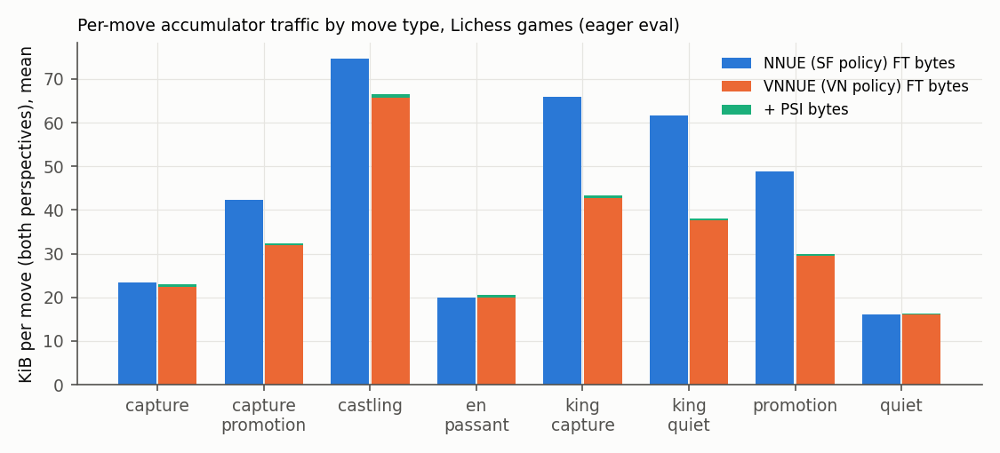
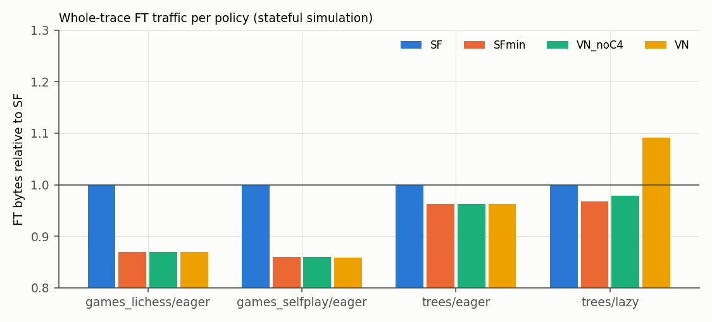
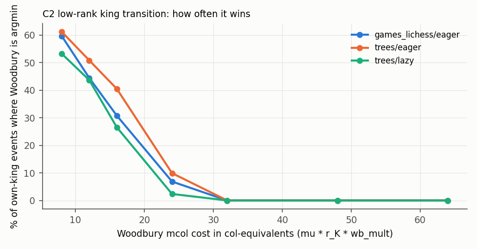
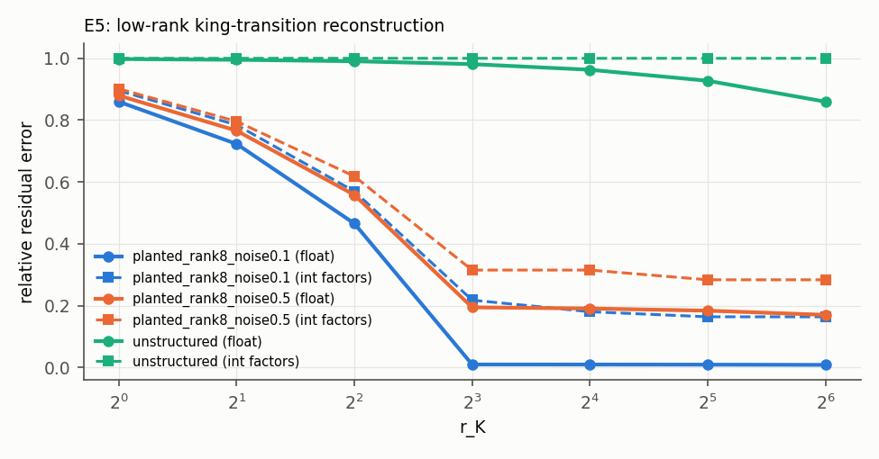
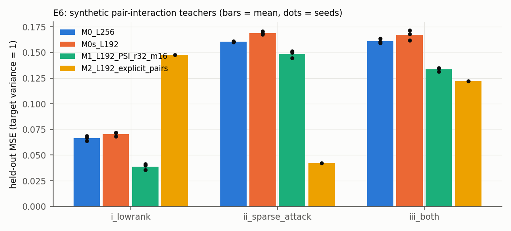

Chess evaluation · Formal verification · Lean 4
VNNUE
Very Easily Updatable Neural Networks: an exact, formally verified update calculus and a power-sum interaction channel for chess evaluation
- 149 Lean theorems · 0 sorry
- 14.5M exactness checks · 0 mismatches
- No Elo or speed claims
Web edition generated from the LaTeX source. Numbering, citations and cross-references match the PDF.
Abstract
Efficiently updatable neural networks (NNUE) made strong neural evaluation affordable inside alpha-beta chess engines by updating the first layer incrementally on every move. We revisit this mechanism as an algebraic object. For a fixed weight table (fixed king bucket and material block), the first layer of an NNUE is a group homomorphism \(\Z ^N\to (\Zm {16})^L\) from the integer feature-delta group into a lane group. The correctness (not the performance) of incremental updates, Finny-table refreshes, Stockfish’s hybrid king update, lazy catch-up and wrap-around integer arithmetic each reduces to an identity of this homomorphism. We make these identities explicit and machine-checked, and we use the resulting calculus to design VNNUE, a proposed extension of Stockfish’s current K32H3 network.
VNNUE adds three things. The first is a small power-sum interaction (PSI) channel. It is a king-independent, White-absolute accumulator of first and second power sums of a learned embedding, and one copy serves both perspectives. By the Newton–Girard identities its pre-shift head values equal exact all-pairs piece\(\times \)piece interaction sums, i.e. a factorization machine; the deployed readout then applies a floor shift and clamps. It costs about \(2r\) lanes per changed piece and never needs a refresh. The second is an exact source-selection policy for accumulator rebuilds whose candidate set contains Stockfish’s. The third is a set of optional modes: low-rank king transitions, net-delta catch-up, and symmetry-equivariant views.
The correctness, range and cost statements are formalized in Lean 4 with Mathlib as 149 theorem declarations in eight modules. The full build succeeds with no sorry, and the axiom audit of all 149 declarations shows only propext, Classical.choice and Quot.sound (Appendix A). Formalization also caught several errors in our own draft design (listed in Section 4.8).
A Python prototype confirms bit-exactness on 6,670,640 accumulator-source checks and 7,803,876 PSI, \(y\)-state and feature-delta checks with 0 mismatches, on subsets of our data (Section 6.1). Under an explicit byte model that charges PSI for its weight columns but not for its own state pass, PSI costs 2.68% of piece-square column bytes on Lichess games (4.69% on quiet moves, which meets the proved bound). The results are mixed elsewhere. The “never worse than Stockfish” source selection, proved under a shared cost model, gains almost nothing beyond taking the minimum over Stockfish’s own candidates, and the size of that gain depends on our simulator’s cache model. On lazy toy search traces, greedy net-delta catch-up increases whole-trace cost by 20.3% in columns (9.2% in FT bytes) relative to the Stockfish-like rule. The low-rank king transition never wins in the default configuration (\(r_K=16\), correction formed on the fly). PSI learns planted pair structure in small training runs but showed no benefit on real-ish labels. We make no playing-strength, Elo or speed claim. VNNUE is a verified architecture proposal, and we list the engine, training and SPRT experiments that would be needed to evaluate it.
1 Introduction
The evaluation function of a chess engine is called millions of times per second, at the leaves and interior nodes of an alpha-beta search tree. Since 2020 Stockfish, the leading open-source engine, has used an efficiently updatable neural network (NNUE) for this. NNUE was introduced for computer shogi by Nasu [21] and ported to chess shortly afterwards [7, 23]. The trick is old and simple. The first layer of the network is a linear map applied to a huge, sparse, binary feature vector. A move changes only a handful of features, so the first-layer output (the accumulator) can be updated by adding and subtracting a few weight columns instead of being recomputed. This is exactly how engines have always maintained material and piece-square-table scores and Zobrist hash keys [45]. The only difference is that the scalar or bit-string is replaced by a vector of \(L=1024\) int16 lanes.
Over six years the Stockfish community has built many engineering refinements around this core. King-bucketed feature sets with horizontal mirroring were introduced. Refresh caches (“Finny tables”) [10] (an idea the commit credits to Luecx of the Koivisto engine) reconstruct an accumulator from a cached board diff. A hybrid king-move update combines cached entries [34]. Lazy evaluation with catch-up from the last computed ancestor [34] was added, and two-ply add/remove cancellation [6] followed. Threat features [31] and pawn-pair features came later, and the accumulators use wrapping int16 SIMD arithmetic [34]. Each refinement is justified informally and tested by self-play. None is stated as a theorem.
This paper. We take the algebraic view seriously and ask two questions. First, which statements about NNUE-style accumulators are actually true, under which hypotheses? Second, can the resulting calculus suggest architecture changes that are “very easily updatable”, meaning they add expressiveness while keeping the update exact, cheap and refresh-free? Our answer is VNNUE, a design built on Stockfish’s current K32H3 network. We present it with three kinds of evidence of different strength: (i) machine-checked theorems in Lean 4/Mathlib [9, 36]; (ii) exact operation and byte counts from a Python prototype driven by real game sequences and toy search trees; (iii) small training sanity checks.
- 1.
- An exact update calculus for NNUE accumulators (Section 4). For a fixed weight table, accumulators are homomorphisms from the feature-delta group \(\Z ^N\) into an arbitrary abelian group of lanes. From this we derive path independence of incremental updates, any-source correctness of refresh caches, the support bound for net deltas, the symmetric-difference metric on cache entries, and exactness of the Stockfish hybrid update. These are correctness statements; which mechanism is cheaper is a separate, empirical question. Each statement is instantiated at \(\Z \) and at \(\Zm {16}\) (wrapping int16 lanes).
- 2.
- Integer semantics and certificates. Wrapping int16 accumulation decodes exactly whenever the final value is in range, whatever happens in between. Saturating arithmetic is provably path-dependent. Per-lane slot certificates bound lane sums from per-group capacities (the capacities of legal chess positions are an informal input). We also prove the pmaddubsw pair-safety bound and the quantized-sum rounding bound.
- 3.
- The PSI channel. It is a refresh-free, White-absolute power-sum accumulator that serves both perspectives. We prove that its pre-shift head values equal a multi-head factorization machine over all piece pairs (T13), that the halving is exact in integers (T12) and the degree-3 power-sum combination is divisible by 6 (T15), that it is incrementally maintainable (T14), and that the exact state and head sums fit in int16/int32 (T9, T16; the int32 head bias and wrapping \(\Zm {32}\) semantics are not covered). It is universal given \(N^2\) lanes (T17, an existence result that says nothing about \(r=32\)), and a PSI lane is not affine (T18d: nonzero mixed second difference, whereas every affine function has zero, T18c); applying T18c to K32H3 PSQ lanes at fixed king and block is an informal step.
- 4.
- Source selection and optional modes. We specify a min-cost source selection whose candidate set strictly contains Stockfish’s {refresh, Finny, hybrid}, together with its exact never-worse statement and the modelling assumptions it needs. We also give a low-rank king-transition identity and a symmetry framework based on the Klein four-group acting on 768 features, with 192 orbits.
- 5.
- A formalization of 149 theorem declarations (1,907 lines of Lean), all axiom-audited, that compiles against Mathlib v4.35.0 with no sorry (Appendix A).
- 6.
- An honest experimental report (Section 6) that includes several negative results.
Scope and what we do not claim. VNNUE has not been implemented in a C++ engine, trained at scale, or tested in games. We make no claim about Elo, playing strength or nodes per second. Most of our theorems are mathematically easy. Their value lies in stating the hypotheses exactly (e.g. which window a decode is exact on, or which cost function the “never worse” guarantee compares), and in the counterexamples that formalization surfaced. Several of the design’s headline hopes did not survive measurement, and we report these in Sections 6 and 7.
2 Background and a century of history
2.1 Incremental evaluation before NNUE
Since Shannon [28], chess programs have combined minimax (alpha-beta [17]) search with an approximate evaluation function at the leaves. Two cheap incremental structures became standard in every engine. The first is the piece-square table (PST): the evaluation \(\sum _{(p,s)\in \text {pos}}T[p][s]\) is linear in the 768-dimensional one-hot vector of (colour, piece, square), so it updates on a move by \(E\gets E-T[p][\mathit {from}]+T[p][\mathit {to}]\). The second is Zobrist hashing [45]: the key \(h(\text {pos})=\bigoplus _{f\in \text {pos}}R_f\) is a group homomorphism from feature sets under symmetric difference to \((\Z /2)^{64}\), so it updates by XOR. Hand-crafted evaluations also contained explicit pairwise terms, for example the quadratic material-imbalance polynomial in piece counts used by pre-NNUE Stockfish [32], cf. Kaufman’s analysis of material imbalances [16]. Neural evaluation long remained too slow for alpha-beta; AlphaZero [30] instead paired a large network with Monte Carlo tree search.
2.2 NNUE and its evolution in Stockfish
Nasu’s NNUE [21] reconciled neural evaluation with alpha-beta. It uses a very wide, sparse, binary input layer (king-relative piece-square features), followed by a small dense network on CPU SIMD integer arithmetic. The first-layer output is updated incrementally. NNUE entered Stockfish in August 2020 and shipped in Stockfish 12 [7]. Its subsequent evolution follows our research notes and the cited sources [23, 34, 35]:
- Feature sets: HalfKP, then HalfKA/HalfKAv2, then HalfKAv2_hm with horizontal mirroring (32 king buckets). In 2026 these were followed by material-conditioned blocks: K32Q2 (32 own-king buckets \(\times \) opponent queen present/absent) [37], and then K32H3, which has 32 own-king buckets \(\times \) 3 material blocks \(\times \) 704 piece-squares, giving 67,584 inputs per perspective [34, 43].
- Width: the first layer grew to \(L_1=3072\) [38]. Current master is back at \(L_1=1024\) with richer inputs: Full Threats (attacker–target pairs [31, 34]) and pawn-pair features (PP_3Wide).
- Update machinery: lazy updates with catch-up from the last computed ancestor [34]; Finny tables [10], which cache per-king-bucket accumulators and rebuild from the board diff; a hybrid update for own-king moves [34]; two-ply cancellation [6].
- Quantization: int16 accumulators with non-saturating (wrapping) SIMD adds, int8 hidden weights, a 0..127 activation range (which, as we observe in T10, also keeps pmaddubsw pair sums below \(2^{15}\)), threat weights stored as int8 and widened to int16 [23, 34], and quantization-aware training in the most recent releases [35].
Training is done with nnue-pytorch [23] or bullet [14], and changes are accepted by sequential probability ratio tests [39] on the Fishtest framework [33].
2.3 Mathematical lineage
VNNUE draws on several well-established lines of mathematics and computer science.
Homomorphisms and finite differencing. A linear map \(\Phi \) satisfies \(\Phi (x+\delta )=\Phi (x)+\Phi (\delta )\). Incremental maintenance of an expression under small input changes is the subject of Paige and Koenig’s finite differencing [24], of self-adjusting computation [1], of change theories for higher-order languages [5], and of DBSP’s algebra of streams over abelian groups [4]. DBSP’s central observation, that linear operators are their own incremental versions and bilinear operators obey a product rule, is exactly what our PSI update rule (Theorem 4.14) instantiates. Delta networks [22] and DeltaCNN [25] exploit temporal sparsity in deep networks in the same spirit.
Low-rank corrections.
The Sherman–Morrison–Woodbury identities [29, 41] update a matrix inverse under a low-rank change of the
matrix. We borrow only the base-plus-low-rank-correction pattern, for forward evaluation; our king-transition
identity (Theorem 4.23) is elementary distributivity, in which a rank-\(r\) term absorbs the change of king bucket.
Low-rank adaptation [12] is a modern analogue in deep learning. Closest to C2 is nnue-pytorch’s feature
factorization [23]: king-bucketed weights are trained as \(W_\kappa =R_\kappa +Q\) with a shared “virtual” piece-square factor \(Q\) that is
merged into the bucket weights at export. C2 restricts the bucket-specific part to rank \(r_K\) so that it
can be applied incrementally at inference; VNNUE.lowrank_generalizes is the full-rank case of that
factorizer.
Power sums and factorization machines. The Newton–Girard identities [20] express elementary symmetric polynomials through power sums. For example \(2e_2=p_1^2-p_2\) and \(6e_3=p_1^3-3p_1p_2+2p_3\). Rendle’s factorization machines [27] use the degree-2 case to compute all pairwise interactions \(\sum _{i<j}\langle v_i,v_j\rangle x_ix_j\) in linear time. Higher-order FMs [2] and CP decompositions [18] extend the idea. Sum-of-embeddings pooling \(\rho (\sum _x\phi (x))\) is the canonical form of permutation-invariant functions on countable domains [44] (power-sum embeddings appear in their proof for the fixed-size case), and a chess position is a set of pieces. Pairwise piece interactions are not new in chess evaluation: hand-crafted imbalance tables [16, 32] are quadratic in piece counts, threat and pawn-pair features are explicit geometric pairs, and Stockfish’s FT pairwise product \(o_j=u_jv_j\) already forms 512 clipped rank-one quadratic forms per perspective. What PSI adds is a parametrization: a refresh-free, unclipped, king-independent power-sum state for square-level pair interactions that complements those terms.
Equivariance. Group-equivariant networks [8] and parameter sharing [26] tie weights so that a group action on inputs becomes a permutation (a representation) on hidden units. Stockfish’s perspective handling and horizontal mirroring can be viewed as instances of the abstract equivariance statements T21–T22 (Theorems 4.21–4.22); the identification with Stockfish’s index map is informal.
Integer arithmetic. Integer-only inference [13] and classical rounding-error analysis [11] frame our quantization statements. Roofline thinking [40] explains why bytes per update, not arithmetic, is the right cost unit for accumulator updates. Rent-or-buy (ski-rental) competitive analysis [3, 15] underlies our appendix lemma on accumulator materialization.
3 The VNNUE architecture
3.1 Baseline and notation
Baseline. We use Stockfish master as of 9 November 2026, i.e. commit 7cdd5e8 (6 November 2026) [34], as the baseline. Its PSQ feature set is K32H3, with 67,584 inputs per perspective and at most 32 active. The other feature sets are Full Threats and PP_3Wide. The widths are \(L_1=1024\), \(L_2=32\), \(L_3=32\), with 32 layer stacks. The feature-transformer (FT) output is the pairwise product \(o_j=\lfloor \clamp (a_j,0,255)\cdot \clamp (a_{j+512},0,255)/512\rfloor \), giving 512 values per perspective. The PSQ FT table occupies \(67{,}584\times 1024\times 2\) B \(=138.4\) MB. The three blocks (per perspective) are: 0, no rook or queen on the board; 1, some rook or queen, but the opponent has no queen; 2, the opponent has a queen.
Notation. We write \([N]=\{0,\dots ,N-1\}\) for feature indices and \([L]\) for lanes; in Lean these are Fin N and Fin L. Let \(R\) be an abelian group of lane values: \(\Z \) for the specification, \(\Zm {16}\) for wrapping int16 lanes. A weight table is \(W:[N]\to R^{L}\), with column \(W_i\), and \(b\in R^L\) is a bias. Then
for \(x\in \Z ^N\) and \(S\subseteq [N]\). Here \(\one _S\) is the indicator of \(S\), \(\delta (S,T)=\one _T-\one _S\) is the set delta, \(\supp \delta =\{i:\delta _i\neq 0\}\), and \(\colops (S,T)=|S\symd T|\). The incremental fold of a list of deltas \(\ell =[\delta _1,\dots ,\delta _t]\) from an accumulator \(a\) is \(\fold _W(a,\ell )=(\cdots ((a+\Phi _W\delta _1)+\Phi _W\delta _2)\cdots )+\Phi _W\delta _t\). The absolute feature set is \(\mathfrak A=\{0,1\}\times [6]\times [64]\) (colour, piece type, square), with \(|\mathfrak A|=768\). The vector \(\beta (\text {pos})\in \{0,1\}^{768}\) is White-absolute and has at most 32 ones.
Cost units. col is one \(L\)-wide int16 column add or subtract (2 KB at \(L=1024\)). mcol is one \(L\)-wide multiply-add column, with cost ratio \(\mu \geq 1\) to col. pass is one accumulator load+store, \(2\cdot 2L\) bytes. \(k\) is the number of PSQ features changed per perspective: 2 for quiet moves and promotions, 3 for captures, en passant and capture-promotions, 4 for castling. \(k_a\) is the same count in absolute features. It equals \(k\) for every move type, including king moves, because absolute features do not depend on the king.
3.2 Components
Table 1 lists the components. C0 is Stockfish’s FT, unchanged. The headline configuration is C0+C1+C3+C5, with C3 restricted to sources that do not skip materialization (no ancestor net-delta). C4 is off by default: the specification enabled it, but its whole-trace effect was negative in our experiments (Section 6.3), so it awaits a reuse-aware policy. C1\('\), C2, C2\('\) and C6 are ablations.
| Component | Content | Status |
| C0 FT core | \(a_c=b+W_{\mathrm {blk}_c,\kappa _c}x_c+W^T\tau _c+W^P\pi _c\in (\Zm {16})^L\), \(c\in \{W,B\}\) | unchanged |
| C1 PSI | \(P1=V\beta \in (\Zm {16})^r\), \(P2=V^{\circ 2}\beta \in (\Zm {32})^r\), one copy per position | default |
| C1\('\) PSI deg. 3 | \(P1,P2,P3\) for \(R\) lanes of \(A\in \Z ^{R\times 768}\), \(|A|\le 15\) | ablation |
| C2 king transition | \(W_{\mathrm {blk},\kappa }=W^0_{\mathrm {blk}}+U_{\mathrm {blk},\kappa }V_K\) (exact in int16; one \(V_K\) shared by all blocks); state \(y_c=V_Kx_c\) | optional |
| C2\('\) factored king | store \(W^0+\)region term, \(U\), \(V_K\); evaluate \(a_{\text {base}}+U_\kappa y\) at readout | memory experiment |
| C3 source selection | \(\arg \min \) over candidate sources (Table 2) | default |
| C4 net-delta catch-up | \(\Delta =\sum _j\delta _j\) with cancellation, one pass | off (negative result) |
| C5 certificates | per-lane slot certificates for C0, C1, C1\('\), C2; checked offline | default |
| C6 symmetry | isotypic threat channel or lane-permutation mirror tying | ablations |
3.3 The PSI channel (C1)
Parameters and state. The parameters are an embedding \(V\in \Z ^{r\times 768}\) (int8, \(|V|\le 127\)), head weights \(\Lambda \in \Z ^{m\times r}\) (int8), a head bias \(b^z\in \Z ^m\) (int32) and shifts \(\mathit {sh}_e,\mathit {sh}_z\). The defaults are \(r=32\) and \(m=16\). The state is shared between perspectives and White-absolute:
Both are linear in \(\beta \), so they update like NNUE columns. They do not depend on king position or material block, so they never need a refresh.
Readout (per evaluation, per perspective).
For binary \(\beta \), \(E_t=\sum _{i<j}\beta _i\beta _jV_{t,i}V_{t,j}\), hence
(Theorem 4.13). So the pre-shift head value \(z_h-b^z_h\) (computed from the exact \(E_t\)) is a learned sum over all (\(\le \binom {32}{2}=496\)) pairs of present pieces, with a pair table of rank \(\le r\) and diagonal core, i.e. a multi-head factorization machine [27]. The deployed \(u_h\) applies a floor shift, an int16 clamp, a second shift and a 0..127 clamp to it, so it is an FM only approximately. The shifts and clamps act on the exact state at readout, so they cause no drift over a game; that is a different claim from exactness of the readout.
Range of \(z_h\). The head sum \(\sum _t\Lambda _{h,t}\hat e_t\) is \(<2^{31}\) in absolute value for \(r\le 32\) by Theorem 4.16(a) (the proof goes through the bound 133,169,152). The int32 bias \(b^z_h\) does not occur in the Lean statement: it must additionally satisfy \(|b^z_h|\le 2^{31}-1-133{,}169{,}152\), which the export script checks and Lean does not. Likewise \(P2\) is stored as wrapping int32 (\(\Zm {32}\)), but the Lean development has no \(\Zm {32}\) instance and no int32 decode lemma; T9 and T16 bound only the exact integer values of \(P1\), \(P2\) and \(P1^2-P2\).
fc_0 input and initialization. For each layer stack, fc_0 reads \([o_{\mathrm {stm}};o_{\mathrm {nstm}};u_{\mathrm {stm}};u_{\mathrm {nstm}}]\), which is \(1024+2m\) inputs. Setting the extra fc_0 columns \(B_z=0\) alone makes fc_0 compute exactly NNUE’s \(A\,a\), whatever the PSI outputs are (Theorem 4.18(b)); composing this with the rest of the network into whole-network equality is immediate but not itself formalized. With \(\Lambda =0\) (Theorem 4.18(a)) the PSI head sums vanish, so \(u_h\) is the constant \(\clamp (0,127,b^z_h\gg \mathit {sh}_z)\), not \(0\) in general.
Perspective sharing without duplication. Let \(\sigma _c\) be the colour flip \((\mathit {col},\mathit {type},\mathit {sq})\mapsto (1-\mathit {col},\mathit {type},\mathit {sq}\oplus 56)\), and let \(P\) be an involutive lane permutation. Because PSI is White-absolute and king-independent, one state serves both perspectives in any case: an untied model can read the same \(E\) with perspective-specific heads. Under the tying constraint \(V_{P(t),\sigma _c(i)}=V_{t,i}\), the Black-perspective power sums are moreover the White ones read in permuted lane order: \(P1^{(B)}=P1\circ P\) and \(P2^{(B)}=P2\circ P\) (Theorem 4.21). Tying thus makes the Black readout equal to the White readout under a lane permutation and halves the free parameters of \(V\); it does not shrink the state.
Incremental alternative. \(E\) can be maintained directly. Adding feature \(j\) gives \(\Delta E_t=V_{t,j}P1_t(\text {before})\), and removing it gives \(\Delta E_t=-V_{t,j}P1_t(\text {after})\) (Theorem 4.14). This replaces the \(P2\) state by \(r\) multiply-adds per changed feature.
What PSI adds, stated correctly. It is false that NNUE’s first layer is affine in \(\beta \). K32H3 is already degree 2 in \(\beta \) (king one-hot \(\times \) piece-square) and piecewise in material block. Threat and pawn-pair features are explicit, geometry-gated pairs. The pairwise product in the FT output creates clipped rank-one quadratics. The precise statement is narrower: at fixed king squares and fixed block, a K32H3 PSQ lane is affine in the non-king piece indicators, while a PSI lane is not (the PSI half is Theorem 4.18(d); the K32H3 half is an informal coordinate-wise application of Theorem 4.18(c)). PSI therefore adds dense, low-rank, unclipped, king-independent piece\(\times \)piece terms over all pairs. They complement the sparse explicit pairs rather than replacing them. Whether this lowers loss at equal cost is an empirical question (Section 6.6).
Degree 3 (C1\('\), ablation).
With \(A\in \Z ^{R\times 768}\), \(|A|\le 15\), state \(P1,P2,P3\) per lane, the readout \(6e_3=P1^3-3P1\,P2+2P3\) is divisible by 6 (Theorem 4.15: VNNUE.ng3_six_dvd applied to \(y=x\odot v\), which by
VNNUE.ng3_binary has the state’s power sums for binary \(x\); this composition is not a separate Lean
lemma). It is in int32 provided \(|P1|\le 480\), \(|P2|\le 7200\), \(|P3|\le 108{,}000\) (Theorem 4.16(b)). These bounds follow from \(|A|\le 15\) and at most 32
active features by the argument of VNNUE.abs_sum_le_card_mul, but they are not instantiated in
Lean.
3.4 Low-rank king transitions (C2, C2\('\))
Inside a block, constrain \(W_{\mathrm {blk},\kappa }=W^0_{\mathrm {blk}}+U_{\mathrm {blk},\kappa }V_K\). A single \(V_K\) is shared by all blocks and buckets. The integer factors \(U\) (int16) and \(V_K\) (int8) are quantized directly, and the stored int16 table is materialized from the quantized factors, so the identity holds exactly. Each perspective maintains \(y_c=V_Kx_c\in \Z ^{r_K}\). For an own-king move \(\kappa \to \kappa '\) within a block and mirror half (Theorem 4.23),
This costs \(r_K\) mcol if the difference \(\Delta U\) is precomputed or \(2r_K\) mcol if it is formed on the fly, plus \(k\) col. A precomputed \(\Delta U\) table needs about 18.5 MB (188 ordered adjacent bucket pairs within a mirror half \(\times \) 3 blocks \(\times \) \(r_K\times L\times 2\) B; up to 25 MB if 8 neighbours per bucket are assumed) and is not recommended. The identity is elementary distributivity; we call this source “Woodbury” in tables only for the low-rank-correction pattern, not for any matrix inverse. C2 is one candidate source among several and is not claimed to beat Stockfish’s hybrid in general. Like nnue-pytorch’s factorizer [23] it shares a king-independent part across buckets, but it keeps the bucket-specific part low-rank so that it can be applied at inference. The factored mode C2\('\) stores only the region tables and the factors. It saves memory (Section 5) but pays \(r_K\cdot L\) multiply-adds per perspective per evaluation: 16,384 MACs per perspective at \(r_K=16\), i.e. 32,768 for both perspectives, equal to a dense fc_0 (\(1024\times 32\)).
3.5 Source selection (C3) and net-delta catch-up (C4)
When perspective \(c\) needs \(a=\accS (S)\) in table \(T\), any source in Table 2 may be used. A source whose preconditions fail has cost \(\top \). All costs are computable from bitboards and cache metadata before any column is loaded, so the choice is made offline, not as an online (ski-rental) decision.
| id | source | correctness | cost (cols, passes) |
| refresh | bias \(b\) | definition | \(|S|\) col \(+\,\tau _{\text {full}}+1\) pass |
| finny | Finny entry with board \(C\) | Thm. 4.3 | \(|S\symd C|\) col \(+1\) pass |
| hybrid | \(\mathit {prev}-\mathit {cache}_{\text {old}}+\mathit {cache}_{\text {new}}\) + fix-ups | Thm. 4.25 | \(|S_{\text {prev}}\symd C_{\text {old}}|+|S\symd C_{\text {new}}|\) col \(+3\) passes (2 extra) |
| woodbury | C2 transition from parent | Thm. 4.23 | \(\mu r_K\) (or \(2\mu r_K\)) \(+\,k\) col \(+1\) pass |
| ancestor | nearest computed ancestor, net delta | \(|\supp \sum _{j>u}\delta _j|\) col \(+1\) pass |
|
| finnyMirror | mirrored Finny entry (C6 tying only) | valid
by
Thm. 4.21
(over
\(\Z \);
the
\(\Zm {16}\)
version
follows
via
| \(|S\symd C|\) col \(+1\) permutation pass |
C4 handles a lazy evaluation at ply \(t\) from a materialized ancestor \(u\). It forms \(\Delta =\sum _{j=u+1}^t\delta _j\) over sparse index lists, drops zeros, and applies \(\Delta \) in one pass. This generalizes Stockfish’s two-ply cancellation [6]. The author of that change estimated informally (“\(\sim \)0.2% I think”) that few three-move updates involve one side moving the same piece twice in a row [6]; this is not a measurement of how many columns cancellation saves.
3.6 Exact update rules per move type
Table 3 gives the PSI deltas. King moves are ordinary moves for PSI. The PSI update is \(P1\mathrel {+}=\sum _{f\in A}V_{\cdot ,f}-\sum _{f\in R}V_{\cdot ,f}\), and likewise for \(P2\) with \(V^{\circ 2}\). For the FT of perspective \(c\) there are five cases.
- 1.
- A non-king move, or an opponent-king move, with the block unchanged: add and subtract columns as in master (if C2 is on, also update \(y_c\)).
- 2.
- An own-king move within the same block and half: C3 over {refresh, finny, hybrid, woodbury, ancestor}.
- 3.
- An own-king move across the d/e boundary, or castling: C3 over {refresh, finny, finnyMirror, ancestor}, with \(y_c\) recomputed.
- 4.
- A block change: C3 over {refresh, finny, ancestor}.
- 5.
- A lazy evaluation: chain catch-up from the nearest computed ancestor as in master, or another C3 source if cheaper. C4 (one net-delta pass without materializing intermediates) is an off-by-default option.
| Move | removed | added | \(k_a\) |
| quiet (incl. non-castling king) | \((c,p,\mathit {from})\) | \((c,p,\mathit {to})\) | 2 |
| capture | \((c,p,\mathit {from}),(\bar c,q,\mathit {to})\) | \((c,p,\mathit {to})\) | 3 |
| en passant | \((c,P,\mathit {from}),(\bar c,P,\mathit {to}\mp 8)\) | \((c,P,\mathit {to})\) | 3 |
| promotion to \(q\) | \((c,P,\mathit {from})\) | \((c,q,\mathit {to})\) | 2 |
| capture-promotion | \((c,P,\mathit {from}),(\bar c,x,\mathit {to})\) | \((c,q,\mathit {to})\) | 3 |
| castling | \((c,K,\mathit {ksq}),(c,R,\mathit {rsq})\) | \((c,K,\mathit {ksq}'),(c,R,\mathit {rsq}')\) | 4 |
2: \((R,A)\gets \) absolute delta of move \(\triangleright \) Table 3
3: \(st.P1\gets st.\mathit {parent}.P1+\sum _{f\in A}V_{\cdot f}-\sum _{f\in R}V_{\cdot f}\) \(\triangleright \) wrapping int16
4: \(st.P2\gets st.\mathit {parent}.P2+\sum _{f\in A}V^{\circ 2}_{\cdot f}-\sum _{f\in R}V^{\circ 2}_{\cdot f}\) \(\triangleright \) wrapping int32 (not formalized)
5: for \(c\in \{W,B\}\) do
6: record sparse PSQ/threat delta; \(st.\mathit {computed}[c]\gets \) false
7: end for
8: end procedure
9: procedure Evaluate(\(st\))
10: for \(c\in \{W,B\}\) with \(\neg st.\mathit {computed}[c]\) do
11: \(s\gets \arg \min _{s\in \textsc {Candidates}(st,c)}\mathit {cost}(s)\) \(\triangleright \) C3 (ancestor/C4 off by default)
12: \(st.\mathit {acc}[c]\gets s.\textsc {Build}()\) \(\triangleright \) exact by Thms. 4.2, 4.3, 4.23, 4.25
13: end for
14: \(o\gets \) pairwise products of \(st.\mathit {acc}[\mathrm {stm}],st.\mathit {acc}[\mathrm {nstm}]\) \(\triangleright \) as master
15: \(u\gets (\textsc {PsiReadout}(st,\mathrm {stm}),\textsc {PsiReadout}(st,\mathrm {nstm}))\)
16: return \(\mathrm {LayerStack}[\mathrm {bucket}(st)](o,u)\)
17: end procedure
18: procedure PsiReadout(\(st,c\))
19: \((P1,P2)\gets (st.P1,st.P2)\) if \(c=W\) else \((st.P1\circ P,st.P2\circ P)\) \(\triangleright \) Thm. 4.21
20: \(E\gets (P1^2-P2)\gg 1\) \(\triangleright \) exact, Thm. 4.12
21: \(\hat e\gets \clamp (E\gg \mathit {sh}_e,-32768,32767)\); \(z\gets b^z+\Lambda \hat e\) \(\triangleright \) \(|\Lambda \hat e|<2^{31}\) by T16a; \(b^z\) script-checked
22: return \(\clamp (z\gg \mathit {sh}_z,0,127)\)
23: end procedure
3.7 Quantization and certificates (C5)
All accumulators use wrapping arithmetic: \(\Zm {16}\) for int16 lanes and \(\Zm {32}\) for int32 lanes (the Lean development instantiates only \(\Z \) and \(\Zm {16}\)).
Decoding uses a two’s-complement decode \(\dec \) with window \([-32768,32767]\). At export time an offline script checks a
per-lane slot certificate (Theorem 4.9). Features are grouped (by (colour, type) for PSQ lanes, by square
for PSI lanes), and each group gets a legal capacity that allows for promotions: at most 16 pieces
per colour, 8 pawns, 10 knights, bishops or rooks, 9 queens, and 1 king. The certificate then bounds
every reachable lane value. The capacity facts about legal chess positions and the addition of the bias
are informal inputs; Lean proves only the implication from per-group caps to the lane-sum bounds
(VNNUE.slot_certificate), and the per-colour cap of 16 is not used by that per-group theorem. Table 4
summarizes the types.
Tensor | Type | Range | Certificate |
\(W_{\mathrm {blk},\kappa }\), \(b\) | i16 | as master | Thm. 4.9 per lane |
\(V\) (PSI) | i8 | \(|V|\le 127\) | \(|P1|\le 4064\) (i16), \(P2\le 516{,}128\) (i32) |
\(\Lambda \) | i8 | \(|\Lambda |\le 127\) | \(|\sum _t\Lambda \hat e|<2^{31}\) (Thm. 4.16a; proof bound 133,169,152) |
\(b^z\) | i32 | – | \(|b^z|+133{,}169{,}152<2^{31}\), script-checked (not in Lean) |
\(A\) (C1\('\)) | i8 | \(|A|\le 15\) | NG3 range given \(|P_k|\) bounds (Thm. 4.16b; bounds not derived in Lean) |
\(U,V_K\) (C2) | i16, i8 | product exactly equals stored i16 table | Thm. 4.9 on materialized table |
fc_0 extra columns | i8 | \(u_h\in [0,127]\) | pmaddubsw pair bound (Thm. 4.10) |
4 The update calculus: theorems
All statements below are proved in Lean 4 (v4.35.0) against Mathlib (v4.35.0) in namespace VNNUE. For each one we give the Lean name(s), the statement as the Lean code states it (transcribed into conventional notation), and a short proof idea. Where the Lean statement is narrower or differs from the design specification, we say so. Throughout, \(R\) is an arbitrary additive commutative group (AddCommGroup R), \(W:[N]\to [L]\to R\), \(b:[L]\to R\), and \(x,\delta \in \Z ^N\) act on \(R\) by \(\Z \)-scalar multiplication. The definitions are those of VNNUE/Basic.lean (Section 3). Theorem numbers T1–T25 and A1–A2 follow the specification; Appendix B gives the complete index.
4.1 Accumulator algebra (module Accumulator)
Theorem 4.1 (T1: homomorphism and delta rule). For all \(W,b,x,y,\delta \): (a) \(\Phi _W(x+y)=\Phi _W(x)+\Phi _W(y)\); (b) \(\accV (b,W,x+\delta )=\accV (b,W,x)+\Phi _W(\delta )\); (c) \(\Phi _W(\delta )=\sum _{i\in \supp \delta }\delta _i\,W_i\).
Lean VNNUE.Phi_add,
VNNUE.accV_add_delta,
VNNUE.Phi_eq_sum_supp;
instances
VNNUE.accV_add_delta_int,
VNNUE.accV_add_delta_zmod
at
\(R=\Z \)
and
\(R=\texttt {ZMod 65536}\).
Proof idea. Distribute \(\Z \)-scalar multiplication over the finite sum; in (c), terms off the support vanish (Finset.sum_filter).
Theorem 4.2 (T2: path independence). For every list \(\ell \) of deltas, (a) \(\fold _W(\accV (b,W,x),\ell )=\accV (b,W,x+\textstyle \sum \ell )\); (b) if \(\ell \) is a permutation of \(\ell '\), the two folds from \(\accV (b,W,x)\) agree; (c) for any start \(a\) and, for the second identity, \(a=\accV (b,W,x)\),
Lean VNNUE.foldDeltas_eq,
VNNUE.foldDeltas_perm,
VNNUE.foldDeltas_append,
VNNUE.foldDeltas_group;
instances
VNNUE.foldDeltas_eq_int,
VNNUE.foldDeltas_eq_zmod.
Proof idea. Induction on \(\ell \) generalizing \(x\), using T1(b); (b) and (c) follow from (a) and List.Perm.sum_eq and List.sum_append.
Theorem 4.3 (T3: set form; any-source correctness). For finite sets \(S,U\subseteq [N]\): (a) \(\accS (b,W,S)=\accV (b,W,\one _S)\); (b) for every \(U\),
Lean VNNUE.accS_eq_accV,
VNNUE.accS_any_source,
VNNUE.colOps_eq,
VNNUE.Phi_delta,
VNNUE.castLanes_accV_int;
instances
VNNUE.accS_any_source_int,
VNNUE.accS_any_source_zmod.
Proof idea. Split each sum over \(S\) (resp. \(U\)) into \(S\cap U\) and \(S\setminus U\) and cancel with abel; (c) is the disjoint union \(S\symd U=(S\setminus U)\cup (U\setminus S)\). Statement (b) is the correctness of every cache-based source: a Finny entry, a stack ancestor, or the empty set (refresh).
4.2 Delta monoid and cost metric (module DeltaMonoid)
Theorem 4.4 (T4: telescoping). \(\delta (S_0,S_1)+\delta (S_1,S_2)=\delta (S_0,S_2)\), \(\one _S+\delta (S,T)=\one _T\), and \(\supp \delta (S,T)=S\symd T\).
Lean VNNUE.delta_telescope,
VNNUE.ind_add_delta,
VNNUE.supp_delta.
Theorem 4.5 (T5: net-delta support bound). \(\supp (\delta +\varepsilon )\subseteq \supp \delta \cup \supp \varepsilon \), and for every list \(\ell \) of deltas, \(|\supp \textstyle \sum \ell |\le \sum _{\delta \in \ell }|\supp \delta |\).
Lean VNNUE.supp_add_subset,
VNNUE.card_supp_sum_le.
Proof idea. Pointwise contrapositive, then induction with Finset.card_union_le. Cancellation can only reduce the number of columns a catch-up touches. It does not follow that greedy catch-up reduces whole-trace cost (Section 6.3).
Theorem 4.6 (T6: \(\colops \) is a relabelling-invariant metric). For finite sets over any type with decidable equality, \(\colops (A,C)\le \colops (A,B)+\colops (B,C)\), \(\colops (A,B)=\colops (B,A)\), and for injective \(f\), \(\colops (f(S),f(C))=\colops (S,C)\).
Lean VNNUE.colOps_triangle,
VNNUE.colOps_comm,
VNNUE.colOps_image.
So routing through an intermediate source never beats the direct diff, and a mirrored cache entry, valid by T21, costs the same (T6).
4.3 Integer semantics and certificates (module Quantization)
Here \(\dec (y)=y.\mathrm {val}\) if \(y.\mathrm {val}<32768\) and \(y.\mathrm {val}-65536\) otherwise, \(\mathrm {InI16}(v)\iff -32768\le v\le 32767\), and \(\satop (v)=\max (-32768,\min (32767,v))\).
Theorem 4.7 (T7: wrap-around exactness). For integer \(b,W,x\) and every list \(\ell \) of deltas and lane \(j\): (a) \(\mathrm {cast}(\accV (b,W,x))=\accV (\mathrm {cast}\,b,\mathrm {cast}\,W,x)\) in \((\Zm {16})^L\); (b) if \(\mathrm {InI16}(v)\) then \(\dec ((v:\Zm {16}))=v\); (c) if \(\mathrm {InI16}(\accV (b,W,x+\sum \ell )_j)\) then
Lean VNNUE.castLanes_accV,
VNNUE.dec16_intCast,
VNNUE.wrap_exact,
VNNUE.valMinAbs_window,
VNNUE.valMinAbs_neg32768.
Proof idea. \(\Z \to \Zm {16}\) is a ring homomorphism; (c) is T2 in \(\Zm {16}\), then (a), then (b) (by ZMod.val_intCast and omega). Only the final value needs to be in range; intermediate overflow is irrelevant. Part (d) records a correction: an earlier draft claimed valMinAbs is exact on \([-2^{15},2^{15})\), which is false at \(-2^{15}\).
Theorem 4.8 (T8: saturation is path-dependent). \(\satop (\satop (32767+1)+(-1))\neq \satop (32767+\satop (1+(-1)))\), and \(\satop (\satop (30000+30000)+(-30000))=2767\) while \(\satop (30000+\satop (30000+(-30000)))=30000\).
Lean VNNUE.sat16_not_assoc,
VNNUE.sat16_path_dependent.
Saturating adds (paddsw) therefore cannot replace wrapping adds (paddw) in incremental updates. Correctness requires wrapping arithmetic together with a range certificate.
Theorem 4.9 (T9: slot certificate and bounds). Let \(g:[N]\to [m]\) be a group map, \(w\in \Z ^N\) a lane of weights, \(M^+_t=\max (0,\max _{g(i)=t}w_i)\) and \(M^-_t=\min (0,\min _{g(i)=t}w_i)\) (Lean Mplus, Mminus). (a) If \(|\{i\in A:g(i)=t\}|\le \mathrm {cap}_t\) for all \(t\), then \(\sum _t\mathrm {cap}_tM^-_t\le \sum _{i\in A}w_i\le \sum _t\mathrm {cap}_tM^+_t\). (b) If \(|A|\le K\), \(0\le M\) and \(w_i\le M\) for all \(i\), then \(\sum _{i\in A}w_i\le KM\). (c) If \(|w_i|\le M\) for all \(i\), then \(|b+\sum _{i\in A}w_i|\le |b|+|A|M\). (d) Instances: if \(|w_i|\le 127\) and \(|A|\le 32\) then \(|\sum _Aw_i|\le 4064\) and the sum is in int16 range; if \(|w_i|\le 127^2\) and \(|A|\le 32\) then \(|\sum _Aw_i|\le 516{,}128<2^{31}\).
Lean VNNUE.slot_certificate,
VNNUE.card_bound,
VNNUE.global_bound,
VNNUE.abs_sum_le_card_mul,
VNNUE.P1_bound,
VNNUE.P2_bound,
VNNUE.P1_numeric,
VNNUE.P2_numeric.
Proof idea. Split \(A\) into fibres of \(g\) (Finset.sum_fiberwise), bound each fibre by its cardinality times \(M^\pm _t\), then by \(\mathrm {cap}_t\). The Lean statement bounds the lane sum without bias. The certified accumulator range adds \(b_\ell \). An earlier “\(\le 32\) slots, one active each” formulation was ill-defined (pieces are unlabelled) and was replaced by this group-map form.
Theorem 4.10 (T10: pmaddubsw pair safety). If \(0\le a_1,a_2\le 127\) and \(|w_1|,|w_2|\le 127\), then \(|a_1w_1+a_2w_2|\le 32258\). In contrast, \(255\cdot 127+255\cdot 127>32767\).
Lean VNNUE.pmaddubsw_safe,
VNNUE.pmaddubsw_unsafe_255.
Theorem 4.11 (T11: quantized-sum rounding error). Let \(s>0\). If \(|q_i-sw_i|\le \frac 12\) for \(i\in A\) and \(|q_b-sb|\le \frac 12\) (all real), then \(\big |(q_b+\sum _Aq_i)/s-(b+\sum _Aw_i)\big |\le (|A|+1)/(2s)\).
Lean VNNUE.quant_sum_error.
Raising the FT scale \(s\) shrinks this bound, but it also moves the \(0..255\) clamp and the \(/512\) product normalization, so it is not a free precision gain.
4.4 Power-sum interactions (module Interaction)
Write \(p_k(v,x)=\sum _ix_iv_i^k\) (Lean psum k v x) and \(e_2(y)=\sum _{i<j}y_iy_j\). Let \(e_3^{\mathrm {ord}}(y)\) be the sum of \(y_iy_jy_k\) over ordered triples of pairwise distinct indices (so \(e_3^{\mathrm {ord}}=6e_3\)). A vector \(x\) is binary if every \(x_i\in \{0,1\}\).
Theorem 4.12 (T12: Newton–Girard order 2 and exact halving). For every \(y\in \Z ^N\), \((\sum _iy_i)^2-\sum _iy_i^2=2e_2(y)\). For binary \(x\) and any lane \(v\), \(p_1(v,x)^2-p_2(v,x)=2e_2(x\odot v)\). For every integer \(x\) (binary or not), \(2\mid p_1(v,x)^2-p_2(v,x)\).
Lean VNNUE.ng2,
VNNUE.psi_lane,
VNNUE.psi_even.
Proof idea. Expand the square as a double sum and split it into \(i<j\), \(i>j\) and \(i=j\). For evenness, write the difference as \(2e_2(x\odot v)+\sum _ix_i(x_i-1)v_i^2\), and note that \(x(x-1)\) is even.
Theorem 4.13 (T13: PSI heads are an all-pairs factorization machine). For \(V\in \Z ^{r\times N}\), \(\Lambda \in \Z ^{m\times r}\), binary \(x\) and every head \(h\),
Lean VNNUE.psi_heads.
Theorem 4.14 (T14: incremental rules). For all integer \(x,\delta \) and every feature \(j\) (with \(e_j\) the unit vector): \(p_k(v,x+\delta )=p_k(v,x)+p_k(v,\delta )\);
Lean VNNUE.psum_add,
VNNUE.psi_add_feature,
VNNUE.psi_remove_feature
(helper
VNNUE.psum_single).
This is the DBSP-style product rule [4]: \(\Delta E=v_jP1(\text {before})\) on add and \(-v_jP1(\text {after})\) on remove. No binarity hypothesis is needed.
Theorem 4.15 (T15: Newton–Girard order 3 and divisibility by 6). For every \(y\in \Z ^N\), \(e_3^{\mathrm {ord}}(y)=p_1^3-3p_1p_2+2p_3\) with \(p_k=\sum _iy_i^k\), and \(6\mid p_1^3-3p_1p_2+2p_3\). For binary \(x\), \(e_3^{\mathrm {ord}}(x\odot v)=p_1(v,x)^3-3p_1(v,x)p_2(v,x)+2p_3(v,x)\).
Lean VNNUE.ng3,
VNNUE.ng3_six_dvd,
VNNUE.ng3_binary.
Proof idea. Inclusion–exclusion over the diagonals \(\{i=j\},\{j=k\},\{i=k\}\) of the triple sum. Divisibility by 2 follows from T12, and divisibility by 3 from \((\sum y)^3\equiv \sum y^3\pmod 3\) (proved by induction on the index set); then use \(\gcd (2,3)=1\).
Theorem 4.16 (T16: int32 range certificates). (a) If \(r\le 32\), \(|\Lambda _t|\le 127\) and \(|e_t|\le 32768\), then \(|\sum _t\Lambda _te_t|<2^{31}\) (the proof goes through the bound \(32\cdot 127\cdot 32768=133{,}169{,}152\)). (b) If \(|p_1|\le 480\), \(|p_2|\le 7200\), \(|p_3|\le 108{,}000\), then \(|p_1^3-3p_1p_2+2p_3|<2^{31}\). (c) If \(|P1|\le 4064\) and \(0\le P2\le 516{,}128\), then \(|P1^2-P2|<2^{31}\).
Lean VNNUE.mix_range,
VNNUE.ng3_range,
VNNUE.e_lane_range.
An earlier version of (b) assumed only a bound on \(p_1\) and was false (take \(p_1=0\), \(p_3=2^{31}\)). The Lean statement carries all three hypotheses.
Theorem 4.17 (T17: universality given \(N^2\) lanes). For every integer pair table \(Q\in \Z ^{N\times N}\) there exist \(r\), \(V\in \Z ^{r\times N}\) and \(\lambda \in \Z ^r\) such that for every binary \(x\), \(\sum _t\lambda _t(p_1(V_t,x)^2-p_2(V_t,x))=2\sum _{i<j}Q_{ij}x_ix_j\).
Lean VNNUE.psi_universal
(helpers
VNNUE.psum_pair,
VNNUE.lane_pair,
VNNUE.pair_sum).
The construction uses \(r=N^2\) lanes indexed by ordered pairs \((a,b)\), pair lanes \(V=e_a+e_b\), and \(\lambda =Q_{ab}\) if \(a<b\), else \(0\). The specification proposed \(r=\binom N2\); the Lean witness is wasteful but simpler. An earlier claim that “\(V=I\) gives every diagonal-core table” is false (\(V=I\) gives \(z\equiv 0\)). T17 is an existence statement at \(r=N^2\) and says nothing about the deployed \(r=32\).
Theorem 4.18 (T18: strict generalization and non-affinity). (a) With \(\Lambda =0\), the head sum \(\sum _t\Lambda _{h,t}(p_1(V_t,x)^2-p_2(V_t,x))\) is \(0\) for every \(V,x\) (before bias, shift and clamp). (b) If the extra fc_0 block \(B_z=0\), then \(A\,a+B_z z=A\,a\). (c) For every \(f(x)=c+w_0x_0+w_1x_1\) on two indicators, \(f(1,1)-f(1,0)-f(0,1)+f(0,0)=0\). (d) For the lane \(v=(1,1)\) and \(q(x)=p_1(v,x)^2-p_2(v,x)\), \(q(1,1)-q(1,0)-q(0,1)+q(0,0)=2\).
Lean VNNUE.psi_zero_heads,
VNNUE.fc0_embed,
VNNUE.affine_second_diff,
VNNUE.psi_not_affine.
Part (b) shows that with the extra fc_0 columns \(B_z=0\), fc_0 computes exactly NNUE’s \(A\,a\), whatever the PSI outputs are. Part (a) shows that at \(\Lambda =0\) the PSI input is a constant (\(b^z\) after shift and clamp). Composing these into whole-network equality (layer stacks, clipping) is immediate but not itself formalized. Parts (c)–(d) support the claim that PSI lanes are not affine in piece indicators. The application to K32H3 (“at fixed king squares and block, a PSQ lane is affine in the non-king piece indicators”) is an informal coordinate-wise use of (c) and is not itself a Lean statement.
4.5 Symmetry (module Symmetry)
Squares are \([64]\); \(\mathrm {mirH}(s)\) maps file \(f\mapsto 7-f\) (\(s\oplus 7\)) and \(\mathrm {flipV}(s)\) maps rank \(\rho \mapsto 7-\rho \) (\(s\oplus 56\)). Features are \(\mathfrak A=[2]\times [6]\times [64]\), with \(\sigma _h(c,p,s)=(c,p,\mathrm {mirH}\,s)\), \(\sigma _c(c,p,s)=(1-c,p,\mathrm {flipV}\,s)\), and \(\canon (i)\) which first normalizes the colour to \(0\) (applying \(\sigma _c\) if needed) and then the file to e–h (applying \(\sigma _h\) if needed).
Theorem 4.19 (T19: Klein four-group on squares). \(\mathrm {mirH}\) and \(\mathrm {flipV}\) are commuting involutions, and \(\mathrm {mirH}\), \(\mathrm {flipV}\) and \(\mathrm {mirH}\circ \mathrm {flipV}\) have no fixed squares. Exactly 32 squares lie on files e–h, and \(\mathrm {mirH}\) maps the a–d squares onto the e–h squares (and e–h into a–d).
Lean VNNUE.klein_squares,
VNNUE.king_half,
VNNUE.king_half_onto.
Theorem 4.20 (T20: free action and 192 orbits). For every \(i\in \mathfrak A\): \(\sigma _hi\neq i\), \(\sigma _ci\neq i\), \(\sigma _h\sigma _ci\neq i\). \(\canon \) is invariant under \(\sigma _h\) and \(\sigma _c\), lands in colour 0 and files e–h, fixes such features, and \(\canon (i)\in \{i,\sigma _hi,\sigma _ci,\sigma _h\sigma _ci\}\). Furthermore \(\canon i=\canon k\iff k\in \{i,\sigma _hi,\sigma _ci,\sigma _h\sigma _ci\}\), and \(|\canon (\mathfrak A)|=192\).
Lean VNNUE.feat_free,
VNNUE.canon_invariant,
VNNUE.canon_mem,
VNNUE.canon_fix,
VNNUE.canon_mem_orbit,
VNNUE.canon_eq_iff,
VNNUE.canon_image_card.
Hence the free Klein-group action has exactly \(768/4=192\) orbits, and full tying leaves 192 free columns. The proofs avoid native_decide, so the trusted base is not enlarged.
Theorem 4.21 (T21: equivariance and PSI perspective sharing). Let \(\sigma \in \mathrm {Perm}([n])\) and \(\pi \in \mathrm {Perm}([L])\), with integer \(W\) tied by \(W_{\sigma i}(\pi j)=W_i(j)\). Then \(\sum _ix_{\sigma ^{-1}i}W_i(\pi j)=\sum _ix_iW_i(j)\). If moreover \(b(\pi j)=b(j)\), then \(\accV (b,W,x\circ \sigma ^{-1})(\pi j)=\accV (b,W,x)(j)\). For PSI, if \(V_{P t}(\sigma i)=V_t(i)\), then \(p_k(V_{Pt},x\circ \sigma ^{-1})=p_k(V_t,x)\) for \(k=1,2\). For the concrete colour flip \(\sigma _c\) on \(\mathfrak A\) and every \(k\): if \(V_{Pt}(\sigma _ci)=V_t(i)\) then \(\sum _ix_{\sigma _ci}V_{Pt}(i)^k=\sum _ix_iV_t(i)^k\).
Lean VNNUE.acc_equivariant,
VNNUE.acc_equivariant_accV,
VNNUE.psi_shared,
VNNUE.psi_shared_sigC.
Proof idea. Reindex the sum by \(\sigma \) (Equiv.sum_comp) and rewrite with the tying hypothesis.
Theorem 4.22 (T22: regular representation and isotypic split). Let \(\sigma \) be an involution on \([n]\) and \(W'_i=(W_i,W_{\sigma i})\) on lanes \([L]\sqcup [L]\). Then \(W'_{\sigma i}(k)=W'_i(\mathrm {swap}\,k)\), and \(\sum _ix_iW'_i(\mathrm {inr}\,j)=\sum _ix_{\sigma i}W_i(j)\). For \(u,v\in \Z ^L\): \((u+v)+(u-v)=2u\) and \((u+v)-(u-v)=2v\). With \(a_\pm (x)_j=\sum _ix_i(W_i(j)\pm W_{\sigma i}(j))\) we have \(a_+(x\circ \sigma )=a_+(x)\) and \(a_-(x\circ \sigma )=-a_-(x)\). The map \((u,v)\mapsto (u+v,u-v)\) is injective on \(\Z ^L\times \Z ^L\), but there are no integers with \(u+v=1\), \(u-v=0\).
Lean VNNUE.regular_rep,
VNNUE.isotypic,
VNNUE.isotypic_action,
VNNUE.isotypic_inj,
VNNUE.isotypic_not_surj.
Stockfish’s horizontal-mirror canonicalization is the regular-representation case. The isotypic split makes a mirror crossing cost one negation pass over \(a_-\) (not “no arithmetic”, as an earlier draft said), at the price of factor-2 scales because the change of basis is not unimodular.
4.6 Refresh and source selection (module Refresh)
Theorem 4.23 (T23: low-rank king transition). Over any commutative ring \(S\), for \(W^0\in S^{L\times n}\), \(U,U'\in S^{L\times r}\), \(V\in S^{r\times n}\) and \(x,x'\in S^n\):
(Every family \(W_k\) equals \(0+W_k\cdot I\), i.e. the factorization at inner dimension \(r=n\) is trivially general.) However, over any field \(F\), if \(r<n\) there is no \(W^0\), \(V\in F^{r\times n}\), \(U_0,U_1\) with \(W^0+U_0V=0\) and \(W^0+U_1V=I_n\). Concretely, this fails over \(\mathbb Q\) with \(n=2\), \(r=1\).
Lean VNNUE.king_transition,
VNNUE.king_transition_y_update,
VNNUE.factored_eq_merged,
VNNUE.lowrank_generalizes,
VNNUE.lowrank_proper,
VNNUE.lowrank_proper_rat_2_1;
instances
VNNUE.king_transition_int,
VNNUE.king_transition_zmod,
VNNUE.factored_eq_merged_int,
VNNUE.factored_eq_merged_zmod.
Proof idea. Matrix–vector distributivity and abel. For lowrank_proper, \((U_1-U_0)V=I_n\) would have rank \(\le r<n\).
Remark 4.24 (Correction). The design specification presented lowrank_generalizes as showing that low-rank king conditioning “generalizes” independent buckets. That is true only at full inner dimension \(r=n\). lowrank_proper (stated for square \(L=n\) tables over any field) shows that for \(r<n\) the factored family cannot represent even \(\{0,I_n\}\). The same obstruction applies to the deployed \(1024\times 704\) tables at \(r_K=16\) by zero-padding and viewing integer weights over \(\mathbb Q\); that extension is an informal corollary, not a separate Lean theorem. So the expressiveness-preservation reading of lowrank_generalizes is wrong. The cost of the restriction is an empirical question (Section 6.5). The identity also covers only transitions with a shared \(W^0\), i.e. within one block and region. Block changes go through refresh or Finny.
Theorem 4.25 (T24: source selection never worse; hybrid correct). Let \(\mathrm {Src}\) be the six sources refresh, finny, hybrid, woodbury, ancestor and finnyMirror, and let \(\mathrm {SF}=\{\text {refresh},\text {finny},\text {hybrid}\}\subseteq \mathrm {Src}\). (a) For finite \(C_1\subseteq C_2\) with \(C_1\neq \emptyset \) and any \(f\) into a linear order, \(\min _{C_2}f\le \min _{C_1}f\). In particular, for every \(\mathrm {cost}:\mathrm {Src}\to \N \cup \{\top \}\) (or into any linear order), \(\min _{\mathrm {Src}}\mathrm {cost}\le \min _{\mathrm {SF}}\mathrm {cost}\). With two cost functions, if \(\mathrm {cost}_V(s)\le \mathrm {cost}_{SF}(s)\) for \(s\in \mathrm {SF}\), then \(\min _{\mathrm {Src}}\mathrm {cost}_V\le \min _{\mathrm {SF}}\mathrm {cost}_{SF}\). (b) For all \(b,W,W',S,S_{\text {prev}},C_{\text {old}},C_{\text {new}},T,T'\):
Lean VNNUE.inf’_superset,
VNNUE.never_worse,
VNNUE.never_worse_general,
VNNUE.never_worse_dominated,
VNNUE.hybrid_correct,
VNNUE.hybrid_correct_impl,
VNNUE.hybrid_correct_zmod,
VNNUE.refresh_accS_any_source.
The never-worse statement is pure monotonicity of the minimum, and its content lies entirely in its modelling assumptions, which the Lean docstrings make explicit. (i) Either one cost function is shared by both engines, or per-source dominance holds (never_worse_dominated). Neither is automatic, because VNNUE may use merged or factored tables, pays the C2\('\) readout tax, and may hold different cache contents. (ii) The overhead of computing the candidate costs is excluded. (iii) Only the FT-column part is covered, and PSI adds its own term (T25). The specification’s deriving Fintype for \(\mathrm {Src}\) does not elaborate in this toolchain, so the Lean development lists the six constructors by hand and checks \(|\mathrm {Src}|=6\) by decide. No statement is affected.
4.7 Complexity (module Complexity)
Theorem 4.26 (T25: PSI overhead and king-event total). For naturals \(k,L,e,\mathrm {cost}_N\) with \(4kL\le \mathrm {cost}_N\): (a) \(4L(\mathrm {cost}_N+ke)\le (4L+e)\,\mathrm {cost}_N\); if \(L>0\), then \(ke/\mathrm {cost}_N\le e/(4L)\) as reals; with \(e=192\), \(L=1024\): \(1000(\mathrm {cost}_N+192k)\le 1047\,\mathrm {cost}_N\), i.e. at most 4.7% (exactly \(192/4096=4.6875\%\)). (b) For candidate sets \(C_1\subseteq C_2\) with \(C_1\) nonempty and any \(f:\iota \to \N \), \(\min _{C_2}f+ke\le \min _{C_1}f+ke\).
Lean VNNUE.psi_overhead,
VNNUE.psi_overhead_ratio,
VNNUE.psi_overhead_instance,
VNNUE.psi_overhead_instance_exact,
VNNUE.king_event_total
(helper
VNNUE.inf’_superset_cx).
The hypothesis \(4kL\le \mathrm {cost}_N\) says that NNUE streams at least \(k\) columns per perspective for both perspectives. Here \(e\) is a modelling choice: the bytes of PSI traffic charged per changed absolute feature. We use \(e=6r\) (the widths of the \(r\) int16 lanes of \(P1\) and \(r\) int32 lanes of \(P2\), \(2r+4r\) bytes), so \(r=32\) gives \(e=192\); if \(V\) is stored as int8 and \(V^{\circ 2}\) as int16, the weight columns are only \(3r\) bytes, so \(6r\) is conservative for column traffic. T25 compares only against NNUE’s column bytes. It says nothing about ratios that include accumulator passes: those must also charge PSI its own state pass (load and store of \(P1,P2\), \(2\cdot 6r=12r=384\) B per make), which our E2 byte model omits (Section 6.2).
Theorem 4.27 (A1: ski-rental materialization). Let \(\mathrm {alg}(B,n)=n\) if \(n<B\), else \(2B-1\), and \(\mathrm {algT}(B,t,n)=n\) if \(n\le t\), else \(t+B\). For \(B\ge 1\): \(B\cdot \mathrm {alg}(B,n)\le (2B-1)\min (n,B)\) for every \(n\), and for every threshold \(t\), \((2B-1)\min (t+1,B)\le B\cdot \mathrm {algT}(B,t,t+1)\).
Lean VNNUE.ski_upper,
VNNUE.ski_lower.
This is the classical rent-or-buy (ski-rental) bound [15], in its discrete \((2-1/B)\) form [3], applied to the only genuinely online decision: whether to materialize an intermediate accumulator.
Theorem 4.28 (A2: fused-pass traffic). For per-ply column counts \(ks\) (length \(t\ge 1\)), \(k_{\text {net}}\le \sum ks\), column cost \(c\) and pass cost \(2a\): \(k_{\text {net}}c+2a+2a(t-1)\le \sum _j(k_jc+2a)\), and therefore \(k_{\text {net}}c+2a\le \sum _j(k_jc+2a)\).
Lean VNNUE.fused_traffic,
VNNUE.fused_one_pass
(helper
VNNUE.sum_map_traffic_cx).
4.8 What the formalization did and did not establish
The formalization covers the algebra of updates and range arguments over abstract index sets. It does not model chess move generation, the K32H3 index map, the threat feature set, SIMD code, or Python or C++ implementations. The link between theorems and code is the empirical bit-exactness test E1 (Section 6.1). During design and formalization, several statements in earlier drafts were found to be false and were corrected. The Lean versions encode the corrections, and several of the counterexamples are themselves theorems: the valMinAbs window (T7d), the degree-3 range lacking \(p_2,p_3\) hypotheses (T16b), “\(V=I\) gives every diagonal-core table” (replaced by T17), “NNUE’s first layer is affine in \(\beta \)” (restated as T18c/d), “never worse than Stockfish” with Stockfish’s set lacking hybrid (T24 includes hybrid), the isotypic “no arithmetic” claim (T22: one negation pass), and the expressiveness reading of low-rank king buckets (T23, lowrank_proper). These were errors in our own specification, caught before implementation; they are not findings about NNUE or Stockfish. Several PSI-related links are also informal: the int32 bias \(b^z\) and the \(\Zm {32}\) wrapping of \(P2\) (Section 3), the degree-3 divisibility for the binary-weighted state and the \(|P_k|\) hypotheses of T16(b), and the composition of T18(a)–(b) into whole-network equality.
5 Complexity and memory analysis
This section is analytic. It uses the specification’s cost model (\(L=1024\); 1 col = 2 KB; \(e=6r\) bytes, i.e. \(2r\) lanes, of PSI traffic per changed absolute feature) and is not measured. The PSI charge \(e\) covers PSI’s weight columns; PSI’s own state pass (load and store of \(P1,P2\), \(12r=384\) B per make) is not part of \(e\) and is discussed in Section 6.2. Section 6 measures the same quantities on real move sequences.
Move type | NNUE (master) | VNNUE (default) | PSI extra (shared) |
Quiet non-king (\(k=2\)) | \(2k+\sum _c(\tau _c+\pi _c)\) col | same | 128 lanes (384 B) |
Capture / e.p. / cap.-promo (\(k=3\)) | \(2k+\sum _c(\tau _c+\pi _c)\) col | same | 192 lanes (576 B) |
Promotion (\(k=2\)) | \(2k+\sum _c(\tau _c+\pi _c)\) col | same | 128 lanes |
Own king, same block and half | \(\min (|S|+\tau _{\text {full}},\,d_F,\,d_{\text {old}}+d_F+2\,\text {pass})\) + other side \(k\) | min over the superset (adds \(\mu r_K+k+\tau \) and ancestor) + other side \(k\) | \(k\cdot 2r\) lanes |
Own king across d/e, castling | \(\min (|S|+\tau _{\text {full}},d_F)\) + other side | \(\min (\dots ,\text {finnyMirror if C6})\) + other side | \(k\cdot 2r\) lanes |
Block change | refresh/Finny both sides | same (C3 superset) | \(k\cdot 2r\) lanes |
\(t\)-ply lazy catch-up | \(\sum _jk_j\) col + about \(t\) passes | \(|\supp \sum _j\delta _j|\) col + 1 pass | \(\sum _jk_j\cdot 2r\) lanes (eager) |
Per evaluation | pairwise 1024 products; fc_0 \(\le 32{,}768\) MACs | same | \(2\cdot 512+1024=2048\) MACs |
Per evaluation, C2\('\) | – | \(+\,r_KL\) MACs per perspective (32,768 for both at \(r_K=16\)) |
|
Table 5 gives the per-move costs. Two statements are proved. First, per build event, from identical accumulator and cache state and under a shared cost function (the T24 assumptions), VNNUE’s FT column cost is \(\le \) the minimum over Stockfish’s candidates. This does not compose over a search: see E3 (Section 6.3), where greedy C4 raises whole-trace columns by 20.3% on lazy trees. Second, PSI’s weight-column traffic is at most \(e/(4L)=4.6875\%\) of NNUE’s PSQ column traffic whenever NNUE streams at least \(k\) columns per perspective (T25). The bound is tight for quiet moves. The ratio falls once NNUE’s passes and threat churn (“3–4\(\times \) as many changing threat features as piece features in a typical midgame” [23]) are included, but such ratios must also charge PSI its state pass. Non-king moves therefore do strictly more work in VNNUE. King moves are never worse in column count per event, under the T24 cost assumptions. Wall-clock effects depend on cache residency: the 24 KB \(V\) table, plus 48 KB if \(V^{\circ 2}\) is stored, should stay in L1/L2, whereas FT columns stream from L3 or DRAM. We have not measured this.
The per-evaluation PSI readout costs 2048 multiply-adds at \(r=32\), \(m=16\). That is 6.3% of a dense fc_0, and a larger share of Stockfish’s sparse fc_0. The factored C2\('\) mode costs \(r_KL\) MACs per perspective per evaluation. At \(r_K=16\) this is 16,384 MACs per perspective, i.e. 32,768 for both perspectives, equal to a dense fc_0 (\(1024\times 32\)): a real tax that has to be bought back by memory savings.
Item | NNUE master | VNNUE default | + C2 merged (\(r_K=16\)) | + C2\('\) factored (\(|P|=4\), \(r_K=16\)) |
PSQ FT table | \(67{,}584\times 1024\times 2\)B \(=138.4\) MB | 138.4 MB | 138.4 MB + \(U\): 3.1 MB + \(V_K\): 11 KB | \(3\cdot 4\cdot 704\cdot 1024\cdot 2\)B \(=17.3\) MB + 3.1 MB \(=20.4\) MB |
PSI \(V\) / \(V^{\circ 2}\) | – | 24 KB / 48 KB | same | same |
\(\Lambda \), \(b^z\) | – | 512 B + 64 B | same | same |
fc_0 extra | – | 32 KB | same | same |
Per-ply state | \(2\times 2\)KB + threat state | + 64 B (\(P1\)) + 128 B (\(P2\)), once per position | + \(2\times 32\) B (\(y\)) | same |
Finny entry | acc + board | unchanged | + \(y\) (32 B) | + \(y\) |
Table 6 gives the memory footprint. The only large potential saving is C2\('\), which would make the PSQ table about 6.8 times smaller. It pays the readout tax above, and E5 (Section 6.5) shows that the integer-factor constraint is costly without quantization-aware training.
6 Experiments
Setup and scope. All numbers in this section are copied from experiments/RESULTS.md, which is generated mechanically from experiments/results/*.json. The machine was a 4-core Windows laptop CPU with Python 3.14, numpy 2.4, torch 2.10 (CPU) and python-chess 1.11, and all seeds were fixed. This is a Python prototype. Op and byte counts are exact counts under an explicit cost model. Wall-clock numbers are numpy/torch proxies that do not represent SIMD C++. The search traces come from a toy alpha-beta searcher, not from Stockfish. No statement in this section concerns playing strength, Elo or nps.
Pre-registered hypotheses. The design specification stated three hypotheses before the experiments, which are our own priors: H1, PSI byte overhead \(\le 4.7\%\) of PSQ column traffic (the T25 bound) under the byte model; H2, at \(r_K=16\) with \(\Delta U\) formed on the fly, the low-rank (“Woodbury”) source wins fewer than 10% of own-king events; H3, C4’s column saving from cancellation is \(<1\%\).
Data. We used three sources (Table 7). The first is the first 3,000 standard games from the January 2013 Lichess database [19] (CC0), giving 202,984 positions. The second is 30 self-play games of a depth-2 alpha-beta with quiescence (2,440 positions). The third is search traces from 200 roots (160 from Lichess games, 40 from self-play), searched by alpha-beta at depth 3 with capture quiescence (at most 4 plies) and MVV-LVA ordering. Each tree was capped at 2,500 nodes, and 116 trees hit the cap. The traces contain 389,664 make events, stored as DFS pre-order node lists, i.e. exactly the make/unmake stream of an accumulator stack. Eager evaluation evaluates every node. Lazy evaluation evaluates the roots, all quiescence and leaf nodes, and interior nodes with probability 0.3. The feature model is a simplified K32H3: 32 mirrored own-king buckets, the 3 verified blocks, and 704 local features (67,584 per perspective). Threat and pawn-pair columns, PSQT outputs and layer stacks are not modelled inside the accumulator. A threat proxy is counted for byte accounting only.
Source | Content | Size |
Lichess 2013-01, first 3,000 standard games | real human move sequences and results | 202,984 positions; 175,984 training positions (ply \(\ge 8\)) |
Self-play | depth-2 alpha-beta + quiescence, material+PST eval, 30 games | 2,440 positions |
Search traces | 200 roots, depth 3 + capture quiescence, 2,500-node cap (116 trees hit it) | 389,664 make events |
6.1 E1: exactness
The prototype uses \(L=64\) int16 lanes, PSI with \(r=32\) and \(m=16\), and C2 rank \(r_K=8\). E1 runs on subsets: the first 300 Lichess games (19,559 positions), all self-play games (2,440), and 15 (eager) / 40 (lazy) of the 200 search roots (34,534 / 88,026 nodes). This is why its build counts (e.g. 39,118 on Lichess) are smaller than those of E3 (405,968). The K32H3 table is the materialized merged C2 table \(W[\mathrm {blk},\kappa ]=W^0[\mathrm {blk}]+U[\mathrm {blk},\kappa ]V_K\), computed modulo \(2^{16}\), so the Woodbury identity is tested on the same table every other source uses. At every accumulator build, every available source is computed with numpy int16 wrapping adds and compared bit for bit with the from-scratch refresh. The sources are refresh, Finny, hybrid, SF chain catch-up with two-ply cancellation, VNNUE ancestor net-delta, and the Woodbury transition. The chosen source’s value is reused downstream, so errors would propagate. PSI checks run at every make event. We tested two weight regimes: normal weights, and stress weights (\(|W^0|\le 6000\), \(|U|\le 300\), \(|V_K|\le 127\), \(|b|\le 20000\)), under which partial sums regularly leave the int16 range. Under stress weights most final lane values are themselves out of int16 range (e.g. 1,762,588 of 2,503,552 lane finals on Lichess); for these lanes bit-exactness means agreement modulo \(2^{16}\) with the refresh, not a correct int16 decode.
| Total | Value |
| accumulator candidate checks (source value \(=\) refresh, bit-exact) | 6,670,640 |
| mismatches | 0 |
| builds where a lane decoded wrongly although the exact final value was in int16 range | 0 |
| (candidate, lane) results with a partial sum outside int16 but in-range final value, all exact | 58,084,584 |
| PSI / \(y\) / feature-delta checks | 7,803,876 |
| PSI / \(y\) / feature-delta mismatches | 0 |
| dataset | eval | policy | builds |
|
|
||||
| games_lichess | eager | SF \(\mu =1\) | 39,118 | 153,205 | 2,824,741 | ||||
| games_lichess | eager | VN \(\mu =1\) | 39,118 | 155,658 | 2,754,658 | ||||
| games_lichess | eager | VN \(\mu =0\) | 39,118 | 155,658 | 2,681,726 | ||||
| games_selfplay | eager | SF \(\mu =1\) | 4,880 | 19,066 | 364,975 | ||||
| games_selfplay | eager | VN \(\mu =1\) | 4,880 | 19,468 | 358,846 | ||||
| games_selfplay | eager | VN \(\mu =0\) | 4,880 | 19,468 | 344,355 | ||||
| trees | eager | SF \(\mu =1\) | 69,068 | 273,612 | 4,878,069 | ||||
| trees | eager | VN \(\mu =1\) | 69,068 | 275,609 | 4,776,872 | ||||
| trees | eager | VN \(\mu =0\) | 69,068 | 275,609 | 4,734,806 | ||||
| trees | lazy | SF \(\mu =1\) | 168,696 | 656,071 | 11,569,113 | ||||
| trees | lazy | VN \(\mu =1\) | 168,696 | 665,948 | 11,467,537 | ||||
| trees | lazy | VN \(\mu =0\) | 168,696 | 665,948 | 11,328,886 |
Results. Tables 8 and 9 show the results. There were 6,670,640 accumulator-source checks and 7,803,876 PSI, \(y\)-state and feature-delta checks, all with 0 mismatches. The PSI checks cover the following:
- incremental \(P1,P2\) against full recomputation;
- \(P1^2-P2\) is always even;
- incrementally maintained \(E\) (T14);
- the multi-head readout against a brute-force sum over all present piece pairs (T13);
- the Black view as a lane permutation under tying (T21).
In 58,084,584 (candidate, lane) results the update path left the int16 range and still decoded exactly, as T7(c) predicts. In the lazy VN runs with \(\mu =1\) (resp. \(\mu =0\)), 36,864 (resp. 37,128) builds used the ancestor net-delta and 3,081 (resp. 9,955) used Woodbury.
Saturation (T8), empirically. Along the first 200 Lichess games, each perspective’s accumulator was updated incrementally with wrapping adds and with saturating adds, and each was compared with the same arithmetic applied from scratch. With normal weights nothing saturated: 0 mismatches of 25,680 for both. With stress weights, 25,280 of 25,680 saturating accumulators differed (1,518,777 lanes). In 456,904 of those lanes the exact final value was in range, so saturation gave a wrong answer that wrapping got right. Wrapping had 0 mismatches.
6.2 E2: PSI overhead
The cost model is \(L=1024\); 1 col = 2048 B; 1 pass = 4096 B; PSI = 192 B and 64 lanes per changed absolute feature, applied eagerly at every make event; threat-proxy columns are 1 KB. The PSI charge covers its weight columns only. NNUE is charged its accumulator passes, but PSI is not charged its own state pass (load and store of \(P1,P2\): \(2\cdot (64+128)=384\) B per make). The “incl. passes” ratios below are therefore asymmetric and favour PSI: counting the state pass, a quiet move costs PSI \(384+384=768\) B against NNUE’s 16,384 B, i.e. the same 4.69% as the column-only ratio rather than 2.34%.
| dataset | positions | quiet | capture |
| castling |
|
|
||||||
| games_lichess | 202,984 | 64.5% | 22.1% | 9.7% | 2.3% | 2.279 | 23.048 / 25 / 32 | ||||||
| games_selfplay | 2,440 | 60.9% | 21.4% | 15.6% | 0.0% | 2.229 | 21.48 / 22 / 32 | ||||||
| trees | 389,664 | 43.2% | 48.8% | 4.9% | 0.1% | 2.518 | 23.793 / 25 / 31 |
| move type | count |
|
|
|
|
|
|
||||||||||||
| quiet | 128,999 | 4 | 4 | 16,384 | 384 | 4.69% | 2.34% | ||||||||||||
| capture | 44,132 | 7.724 | 7.241 | 24,010 | 576 | 3.64% | 2.40% | ||||||||||||
| king_quiet | 19,305 | 25.332 | 14.822 | 63,173 | 384 | 0.74% | 0.61% | ||||||||||||
| castling | 4,519 | 33.317 | 28.883 | 76,425 | 768 | 1.13% | 1.00% | ||||||||||||
| king_capture | 2,407 | 27.734 | 17.363 | 67,551 | 576 | 1.01% | 0.85% | ||||||||||||
| promotion | 502 | 20.45 | 10.765 | 50,074 | 384 | 0.92% | 0.77% | ||||||||||||
| en_passant | 90 | 6 | 6 | 20,480 | 576 | 4.69% | 2.81% | ||||||||||||
| capture_promotion | 30 | 17.133 | 11.933 | 43,281 | 576 | 1.64% | 1.33% |

Results. Tables 10–11 and Figure 1 show the results. On a quiet move PSI adds exactly 4.69% of PSQ column bytes, which is the T25 bound; the bound is tight at \(k=2\). Over all Lichess moves PSI adds 2.68% of PSQ column bytes. This drops to 1.75% once NNUE’s accumulator passes are counted (but not PSI’s state pass, see above), and to 1.14% once the threat proxy is counted (self-play: 2.62%, 1.71%, 1.19%); the threat-proxy figures are computed on the first 600 Lichess games (36,701 moves). On that subset the threat proxy changes 6.798 features per move and perspective on average, 2.98 times the number of changed piece-square features, slightly below the “3–4\(\times \) in a typical midgame” stated in the nnue-pytorch documentation [23]. Own-king moves (quiet, captures and castling) are 13.1% of Lichess moves (26,231 of 199,984). In games, 8.94% of accumulator builds need a table change (king bucket, mirror or block). Hypothesis H1 (PSI overhead \(\le 4.7\%\) of PSQ column bytes) therefore holds under the byte model, which charges PSI for weight columns only. Whether the extra bytes cost wall-clock time in an engine is not measured.
6.3 E3: source selection and net-delta catch-up
We compare four policies, each simulated independently over the whole event stream with its own Finny caches and materialized accumulators:
- SF, a Stockfish-like rule: chain catch-up if there is no table change, otherwise hybrid if its conditions hold, otherwise Finny;
- SFmin: chain catch-up whenever available (as SF), otherwise the argmin over {refresh, Finny, hybrid}; the SF-set minimum in Table 13 is defined the same way;
- VN_noC4, the argmin over {refresh, Finny, hybrid, chain}, i.e. SFmin except that it may skip an available chain;
- VN, which is VN_noC4 plus ancestor net-delta (C4).
The argmin scalar is \(\mathrm {cols}+\mu \cdot \mathrm {mcols}+2\cdot \mathrm {passes}\). Woodbury is not in these candidate sets; it is evaluated separately in E4. Cache model. In the main run (Tables 12–15) each policy keeps one Finny cache for the whole dataset, so entries persist across games and search trees and are updated only when a Finny, refresh or hybrid source is used. They are therefore stale, not cold: an entry may come from an unrelated game. Stockfish clears its refresh table on ucinewgame and its cache is warmed by the search itself. We therefore reran all four policies with the cache cleared at every root (each game and each search tree, warmed by the run itself; Table 14).
| dataset | policy |
|
|
|
|
|
|
||||||||||||
| games_lichess/eager | SF | 7.841 | 2.079 | 24,576 | 1.0000 | 1.0000 | 1.75% | ||||||||||||
| SFmin | 6.438 | 2 | 21,377 | 0.8211 | 0.9618 | 2.02% | |||||||||||||
| VN_noC4 | 6.436 | 2 | 21,373 | 0.8208 | 0.9618 | 2.02% | |||||||||||||
| VN | 6.436 | 2 | 21,373 | 0.8208 | 0.9618 | 2.02% | |||||||||||||
| games_selfplay/eager | SF | 7.877 | 2.102 | 24,744 | 1.0000 | 1.0000 | 1.71% | ||||||||||||
| SFmin | 6.382 | 2 | 21,263 | 0.8102 | 0.9513 | 1.99% | |||||||||||||
| VN_noC4 | 6.38 | 2 | 21,257 | 0.8099 | 0.9513 | 1.99% | |||||||||||||
| VN | 6.379 | 2 | 21,256 | 0.8098 | 0.9513 | 1.99% | |||||||||||||
| trees/eager | SF | 5.586 | 2.088 | 19,990 | 1.0000 | 1.0000 | 2.42% | ||||||||||||
| SFmin | 5.399 | 2 | 19,249 | 0.9666 | 0.9580 | 2.51% | |||||||||||||
| VN_noC4 | 5.394 | 2 | 19,239 | 0.9656 | 0.9580 | 2.51% | |||||||||||||
| VN | 5.398 | 2 | 19,248 | 0.9665 | 0.9580 | 2.51% | |||||||||||||
| trees/lazy | SF | 5.842 | 2.129 | 20,683 | 1.0000 | 1.0000 | 2.44% | ||||||||||||
| SFmin | 5.665 | 2.056 | 20,022 | 0.9697 | 0.9657 | 2.52% | |||||||||||||
| VN_noC4 | 5.805 | 2.036 | 20,228 | 0.9938 | 0.9564 | 2.49% | |||||||||||||
| VN | 7.026 | 2 | 22,581 | 1.2027 | 0.9396 | 2.23% |
| dataset | policy |
|
|
|
||||||
| games_lichess/eager | VN_noC4 | True | 347 | 0.02% | ||||||
| games_lichess/eager | VN | True | 534 | 0.03% | ||||||
| games_selfplay/eager | VN_noC4 | True | 7 | 0.03% | ||||||
| games_selfplay/eager | VN | True | 9 | 0.04% | ||||||
| trees/eager | VN_noC4 | True | 3,335 | 0.09% | ||||||
| trees/eager | VN | True | 3,760 | 0.10% | ||||||
| trees/lazy | VN_noC4 | True | 407,985 | 9.96% | ||||||
| trees/lazy | VN | True | 948,711 | 18.73% |

Results. Tables 12–13 and Figure 2 show the results.
- 1.
- The never-worse property holds per event, as T24 guarantees.
- 2.
- The superset adds almost nothing. In the eager runs, almost all of the gain of VN over the SF rule comes from taking the argmin over SF’s own set (SFmin); on lazy trees VN is worse than SF (item 3). SFmin and VN cost within 0.1% of each other in the eager runs. The per-event savings of VN over the SF-set minimum (at most 0.10% in eager runs, Table 13) come from VN being allowed to pick refresh, Finny or hybrid where SFmin is forced to chain, plus the ancestor candidate; Woodbury is not in these sets.
- 3.
- The size of the SFmin gain is a simulator artifact. In the main run the Finny cache persists across games and trees, so its entries are stale, and SF’s hybrid rule is often more expensive than a plain Finny refresh: at table changes on Lichess games, hybrid averages 36.7 columns and Finny 16.3 (Table 15). With the cache cleared at every root (Table 14), the column ratio of SFmin to SF on Lichess games rises from 0.8211 to 0.9387 (FT bytes 0.9466), and to 0.9780 on eager trees. What remains comes from our model of the SF rule, which never chooses a plain refresh; with a reset cache, hybrid still averages 30.4 columns at table changes on Lichess games against 18.8 for Finny. This is not evidence about Stockfish itself, whose hybrid conditions and cache warm-up we model only approximately, and it is no evidence that VNNUE saves bytes on king moves.
- 4.
- Greedy C4 hurts in a stateful search. On the lazy trees, VN uses 20.3% more columns and 9.2% more FT bytes per evaluation than SF, with 6% fewer passes (with the cache reset per root: 1.2169 and 1.0992). The cause is that C4 skips materializing intermediate accumulators that sibling nodes would later reuse. The per-event counterfactual “saving” (18.73%) is therefore misleading: the policies diverge in state, and per-event optimality does not compose. Even without C4, VN_noC4 is worse than SFmin on lazy trees (5.805 vs 5.665 cols/eval, 20,228 vs 20,022 FT bytes/eval) despite a 9.96% per-event counterfactual saving, so the non-composition is a property of greedy argmin over the larger set, not only of C4.
- 5.
- Cancellation is larger than our prior. Within catch-ups of length \(\ge 2\) (227,886 events in the lazy run), cancellation saved 10.85% of columns, with mean net-support ratio 0.905. Stockfish’s PR [6] gives no figure for how much cancellation saves; its author estimated informally that about 0.2% of three-move updates have one side moving the same piece twice, which is a different statistic from our column saving. We attribute our higher saving to frequent same-square quiescence recaptures in our toy trees. Our own prior H3 (column saving \(<1\%\)) is therefore not supported, but the whole-trace effect of greedy C4 is negative.
A caveat: our “lazy” mode removed only 4% of evaluations, because most nodes in these trees are quiescence nodes.
| dataset | policy |
|
|
|
|
|
||||||||||
| games_lichess/eager | SF | 7.939 | 24,777 | 1.0000 | 1.0000 | |||||||||||
| SFmin | 7.452 | 23,455 | 0.9387 | 0.9466 | ||||||||||||
| VN | 7.45 | 23,450 | 0.9384 | 0.9464 | 0.02% | |||||||||||
| games_selfplay/eager | SF | 7.682 | 24,344 | 1.0000 | 1.0000 | |||||||||||
| SFmin | 7.094 | 22,720 | 0.9234 | 0.9333 | ||||||||||||
| VN | 7.09 | 22,713 | 0.9230 | 0.9330 | 0.03% | |||||||||||
| trees/eager | SF | 5.527 | 19,870 | 1.0000 | 1.0000 | |||||||||||
| SFmin | 5.405 | 19,262 | 0.9780 | 0.9694 | ||||||||||||
| VN | 5.406 | 19,263 | 0.9781 | 0.9695 | 0.11% | |||||||||||
| trees/lazy | SF | 5.78 | 20,555 | 1.0000 | 1.0000 | |||||||||||
| SFmin | 5.671 | 20,034 | 0.9812 | 0.9746 | ||||||||||||
| VN_noC4 | 5.811 | 20,240 | 1.0055 | 0.9847 | 9.96% | |||||||||||
| VN | 7.033 | 22,595 | 1.2169 | 1.0992 | 18.72% |
| Lichess games, per move |
|
|
|
|
||||||||
| king_quiet | 25.332 | 14.822 | 19.48 | 14.874 | ||||||||
| king_capture | 27.734 | 17.363 | 21.408 | 17.558 | ||||||||
| castling | 33.317 | 28.883 | 32.414 | 32.414 | ||||||||
| capture | 7.724 | 7.241 | 7.308 | 7.298 |
| dataset | builds |
|
|
|
||||||
| games_lichess/eager | 405,968 | 36,312 (8.94%) | 16.289 / 16 / 35 | 36.683 / 36 / 65 | ||||||
| games_selfplay/eager | 4,880 | 519 (10.64%) | 13.81 / 12 / 34.35 | 32.224 / 32 / 60.8 | ||||||
| trees/eager | 779,328 | 52,504 (6.74%) | 5.877 / 4 / 21 | 8.48 / 6 / 30 | ||||||
| trees/lazy | 746,760 | 86,616 (11.60%) | 4.635 / 4 / 10 | 8.436 / 7 / 28 |
6.4 E4: the low-rank king transition as a candidate
The Woodbury cost is \(\mathrm {wb\_mult}\cdot r_K\) mcol \(+|x_t\symd x_u|\) col \(+1\) pass, where \(\mathrm {wb\_mult}=2\) when \((U_{\kappa '}-U_\kappa )y\) is formed on the fly and \(\mathrm {wb\_mult}=1\) when \(\Delta U\) is precomputed.
| \(r_K\) | \(\mu \) | wb_mult |
|
|
|
|
|
|
||||||||||||
| 4 | 1.0 | 2 | 59.7% | 0.8052 | 125,208 | 0.9011 | 0.9390 | 22.706 | ||||||||||||
| 4 | 1.5 | 2 | 44.4% | 0.8357 | 93,224 | 0.9427 | 0.9427 | 22.706 | ||||||||||||
| 4 | 2.0 | 2 | 30.7% | 0.8734 | 64,528 | 0.9722 | 0.9524 | 22.706 | ||||||||||||
| 8 | 1.0 | 2 | 30.7% | 0.8734 | 129,056 | 0.9722 | 0.9828 | 45.411 | ||||||||||||
| 8 | 1.5 | 2 | 6.9% | 0.9667 | 28,768 | 0.9997 | 0.9930 | 45.411 | ||||||||||||
| 8 | 2.0 | 2 | 0.0% | 1.0000 | 0 | 1.0000 | 1.0000 | 45.411 | ||||||||||||
| 16 | 1.0 | 1 | 30.7% | 0.8734 | 129,056 | 0.9722 | 0.9828 | 90.823 | ||||||||||||
| 16 | 1.0 | 2 | 0.0% | 1.0000 | 0 | 1.0000 | 1.0000 | 90.823 | ||||||||||||
| 16 | 1.5 | 1 | 6.9% | 0.9667 | 28,768 | 0.9997 | 0.9930 | 90.823 | ||||||||||||
| 16 | 1.5 | 2 | 0.0% | 1.0000 | 0 | 1.0000 | 1.0000 | 90.823 | ||||||||||||
| 16 | 2.0 | 1 | 0.0% | 1.0000 | 0 | 1.0000 | 1.0000 | 90.823 | ||||||||||||
| 16 | 2.0 | 2 | 0.0% | 1.0000 | 0 | 1.0000 | 1.0000 | 90.823 |

Results. Table 16 and Figure 3 show the results. Woodbury is the argmin at own-king events only when \(\mu r_K\,\mathrm {wb\_mult}\le 24\) column-equivalents. At the specification default (\(r_K=16\), \(\Delta U\) formed on the fly) it won 0% of own-king events for every \(\mu \in \{1,1.5,2\}\) on every swept dataset (Lichess games, eager and lazy trees; self-play was not swept). This is consistent with hypothesis H2. With precomputed \(\Delta U\) at \(\mu =1\) it wins 30.7% of own-king events on Lichess games and uses 12.7% fewer plain columns, but it adds 129,056 mcols, so the col-equivalent ratio is 0.9722 and FT bytes fall only 1.7% (ratio 0.9828; 21,005.8 vs 21,372.8 B per evaluation). That also requires about 91 extra \(y\)-maintenance lanes per make event and a precomputed \(\Delta U\) table (about 18.5 MB, Section 3). On search trees Woodbury lowers column count slightly (0.9749 at \(r_K=4\), \(\mu =1\), eager) but increases FT bytes (ratio 1.0250 eager, 1.0596 lazy) once its mcols are counted (RESULTS.md §2.5). The cache-reset rerun gives the same picture: 0.9784 of VN’s FT bytes on Lichess games at \(r_K=16\) with precomputed \(\Delta U\), and 1.0420 on eager trees (RESULTS.md §2.7).
6.5 E5: cost of the low-rank integer factorization
We used a synthetic planted table: one block, 32 buckets, 704 features and 256 lanes, with \(W_k=W^0+U_kV\) (true rank 8) plus Gaussian noise, and an unstructured control. \(V_K\) is the top-\(r_K\) right singular subspace of the stacked residuals. In “int factors”, \(V_K\) is quantized to int8 and \(U\) to int16 so that \(UV_K\) is in table units at scale 64, and the integer product is materialized (the C2 exactness requirement).
| table | \(r_K\) | float SVD |
|
|
||||
| planted_rank8_noise0.1 | 4 | 0.466 | 0.57 | 2.08e-05 | ||||
| 8 | 0.00978 | 0.218 | 2.08e-05 | |||||
| 16 | 0.0096 | 0.18 | 2.08e-05 | |||||
| 64 | 0.00856 | 0.164 | 2.08e-05 | |||||
| planted_rank8_noise0.5 | 8 | 0.195 | 0.315 | 1.65e-05 | ||||
| 16 | 0.191 | 0.315 | 1.65e-05 | |||||
| unstructured | 8 | 0.981 | 1 | 2.1e-05 | ||||
| 16 | 0.963 | 1 | 2.1e-05 | |||||
| 64 | 0.86 | 1 | 2.1e-05 |

Results. Table 17 and Figure 4 show the results. On the planted rank-8 table, rank 8 recovers the residual in float (relative error 0.00978). Rounding \(U\) and \(V_K\) so that their product is exact raises the error to 0.218, against 2.08e-05 for a plain int16 table at the same scale. Without QAT, the integer-factor constraint is expensive. On an unstructured table low rank does not help at all. This experiment complements lowrank_proper (T23).
6.6 E6–E8: small training sanity checks
Configuration. All models were trained for 6 epochs with batch size 1024 and Adam with a one-cycle schedule (max_lr 2e-3), on seeds 0, 1, 2. They use a single White-absolute perspective, no king buckets and no layer stacks. The 175,984 Lichess positions (ply \(\ge 8\)) were split by game into 140,307 training and 35,677 validation positions. The synthetic teachers are \(y=z(\mathrm {PST}\cdot \beta )+z(\text {pair term})+\text {noise}\), standardized to unit variance. The pair term is (i) a low-rank \(Q\) (rank 8, dense), (ii) a sparse “attack-geometry” \(Q\) with 72,590 nonzero pairs, or (iii) both. The models are listed below.
- M0_L256 (201,281 parameters, 256 update lanes per changed feature).
- M0s_L192 (150,977 parameters, 192 lanes).
- M1_L192_PSI_r32_m16 (176,593 parameters, 256 lanes). This model is matched to M0_L256 in update lanes, not in bytes (\(P2\) lanes are int32: \(192\cdot 2+32\cdot 2+32\cdot 4=576\) B against 512 B per changed feature) and not in readout MACs, which M0 does not pay.
- M2_L192_explicit_pairs (14,088,449 parameters). It also updates \(L\) lanes for each changed active pair, of which there are on average 40.044 per position. M2 is a non-cost-matched reference with oracle knowledge of teacher (ii)’s support, run with 1 seed.
| teacher | M0_L256 | M0s_L192 | M1 (PSI) | M2 (explicit pairs) |
| i_lowrank | 0.0666 \(\pm \) 0.0025 | 0.0706 \(\pm \) 0.0022 | 0.0389 \(\pm \) 0.0031 | 0.1476 |
| ii_sparse_attack | 0.1607 \(\pm \) 0.0003 | 0.1691 \(\pm \) 0.0015 | 0.1487 \(\pm \) 0.0035 | 0.0424 |
| iii_both | 0.1612 \(\pm \) 0.0022 | 0.1672 \(\pm \) 0.0049 | 0.1336 \(\pm \) 0.0020 | 0.1222 |

E6 results. Table 18 and Figure 5 show the results. On all three synthetic pair teachers, the cost-matched M1 had lower held-out MSE than M0 and M0s. The explicit-pair reference M2 is best on the sparse-attack teacher and on “both”, and worst on the low-rank teacher; that last result is a single seed with a 14-million-parameter table and is likely undertrained, so it is not a meaningful comparison. These teachers were built to contain pair structure. The result shows that PSI can learn such structure and nothing about chess evaluation.
Quantized PSI readout. We took M1 trained on teacher (iii), seed 0, quantized \(V\) and \(\Lambda \) to int8, and evaluated it on 4,000 validation positions. The maximum \(|P1|\) was 571 (bound 4064) and the maximum \(P2\) was 43,527 (bound 516,128). \(P1^2-P2\) was even everywhere, and the maximum \(|z_{\mathrm {int}}|\) was 21,117,603, below \(2^{31}\). The integer pipeline equalled a float evaluation of the quantized weights, and quantization gave a relative RMS error of 0.0161 in \(z\).
| teacher | untied | tied | |
| iii_both | 0.1337 \(\pm \) 0.0020 | 0.1498 \(\pm \) 0.0062 | |
| iii_both_colour_symmetrised | 0.1362 \(\pm \) 0.0029 | 0.1209 \(\pm \) 0.0013 | |
| label | mean predictor | M0_L256 / M0s_L192 | M1 (PSI) |
| game_result_white_pov | 0.2412 | 0.2807 \(\pm \) 0.0030 / 0.2809 \(\pm \) 0.0037 | 0.2920 \(\pm \) 0.0022 |
| material_pst_eval_tanh | 0.3025 | 0.0158 \(\pm \) 0.0008 / 0.0155 \(\pm \) 0.0015 | 0.0158 \(\pm \) 0.0023 |
E7 and E8 results. Table 19 shows the results. E7 retrains the untied M1 separately; the 0.0001 difference from Table 18 (0.1337 vs 0.1336) is run-to-run nondeterminism. Tying \(V\) under the colour flip hurt on a teacher that is not colour-symmetric and helped on a colour-symmetrized one. T21 held exactly on the trained tied model: the maximum \(|P1(\text {flipped})-P1[\text {perm}]|\) and \(|P2(\text {flipped})-P2[\text {perm}]|\) were both \(0.00\). On game results, every model was worse than predicting the training mean, so this data and label combination is too small and noisy to compare models on. PSI was the worst. On a linear material+PST label all models tie, as expected, because PSI has nothing to add to a label that is linear in \(\beta \). No real-label benefit of PSI was observed.
6.7 Wall-clock proxy
Table 20 gives the timings. They were taken with Python on a 138.4 MB int16 table (single thread, median of 5). Unbatched timings measure Python dispatch more than memory traffic. In batched torch kernels, a PSI quiet-move update costs 0.066 of an NNUE quiet-move update (4 columns), against a byte ratio of \(384/8192=0.047\). None of these timings predicts engine nps.
| unbatched kernel | ns/event | batched kernel | ns/event | GB/s |
| NNUE quiet move, both persp., 4 cols | 9,572 | NNUE quiet, 4 cols | 7,578 | 1.081 |
| PSI quiet move \(P1,P2\) | 5,360 | PSI quiet \(P1,P2\) | 503.502 | 0.763 |
| refresh, 32 cols, one persp. | 49,841 | refresh, 32 cols | 46,933 | 1.396 |
| Woodbury \(r_K=16\) + 2 cols, one persp. | 39,960 | |||
| PSI readout, one persp., \(m=16\) | 27,140 |
6.8 Limitations of the experiments
- The K32H3 model is simplified: threat and pawn-pair columns are not in the accumulator (threat bytes come from a proxy and are only counted), and there are no PSQT outputs and no layer stacks.
- Search traces come from a toy alpha-beta (depth 3 + quiescence, 2,500-node cap, 116 of 200 trees truncated), not from Stockfish. Catch-up lengths, king-move frequencies and cache warmth are proxies.
- The Stockfish policy is modelled from the specification text. The backward catch-up fill after a Finny refresh is not modelled, and pass costs are a uniform \(4L\) bytes.
- In the main E2–E4 run the Finny cache persists across games and trees (Section 6.3); the rerun with a per-root reset changes the SF/SFmin ratios substantially but not the qualitative conclusions.
- E1 covers subsets of the data (Section 6.1).
- Training uses one perspective, no king buckets, 6 epochs on 140k positions and synthetic teachers. M2 used 1 seed. E5 uses post-training quantization of the factors, not QAT.
- Wall clock comes from Python on a 4 GB laptop.
7 Discussion
- The algebraic view is right and checkable. For a fixed weight table, the correctness of every accumulator mechanism we examined is an instance of a few identities in a homomorphism \(\Z ^N\to R^L\): T1–T3, T23, T24(b). This holds for incremental updates, Finny caches, the hybrid update, lazy catch-up and low-rank transitions. Instantiating at \(R=\Zm {16}\) makes wrap-around exactness a corollary rather than a folklore observation, and E1 confirmed bit-exactness on 14.5 million checks (6.67M accumulator-source, 7.80M PSI/\(y\)/feature-delta), including 58 million lane results whose paths overflowed.
- PSI is cheap and exact as an update. Its per-move weight-column traffic is bounded by a proved 4.6875% of PSQ column traffic and measured at 2.68% over real games (1.14% with the threat proxy, on the first 600 games); these ratios exclude PSI’s own state pass. It never needs a refresh. Its integer readout is exact over \(\Z \) (T12), and the exact \(P1\), \(P2\) and head sums are within int16/int32 (T9, T16). Wrapping \(\Zm {32}\) semantics for \(P2\) and the bias \(b^z\) are not covered by Lean.
- Formalization caught errors in our own specification. The valMinAbs window, saturation path dependence, the missing hypotheses in the degree-3 range, the false “\(V=I\)” universality claim, the false affinity claim, and the low-rank expressiveness reading were all caught and corrected before implementation. These were errors in our design document; several are known facts (Mathlib’s documented valMinAbs convention, the reason Stockfish uses wrapping adds, an elementary rank argument), not findings about NNUE.
What did not work, or not yet.
- “Never worse” is true but nearly vacuous in practice. T24 is min-monotonicity. Empirically the extra freedom in the VN set (choosing refresh, Finny or hybrid instead of a forced chain, plus the ancestor candidate) contributed at most 0.10% per-event savings in eager runs (Table 13); Woodbury was not in the E3 sets and was evaluated separately (E4, Section 6.4). The visible gain of VN over the SF rule comes from taking the argmin over SF’s own set, which would equally improve Stockfish, and its size depends on our simulator’s cache model (Section 6.3).
- Greedy net-delta catch-up is harmful. Per-event optimality does not compose across a stateful search, and skipping materialization destroys reuse by siblings. On lazy trees even VN_noC4, without C4, is worse than SFmin. C4 would need a reuse-aware policy, for example one guided by the ski-rental analysis (A1), before it could help.
- Low-rank king transitions rarely win. At the specification default they never won. They win own-king events only with a precomputed \(\Delta U\) table (about 18.5 MB) or very small \(r_K\), and even then the net saving is small once their multiply-add columns are counted: on Lichess games at \(r_K=16\) with precomputed \(\Delta U\), FT bytes fall only to 0.9828 of VN’s, and on search trees they rise. E5 shows that the exact integer-factor constraint costs a lot of accuracy without QAT.
- PSI has no demonstrated benefit on chess labels. It learned planted pair structure (E6), but on game results all models were worse than the mean predictor, and on a linear label PSI has nothing to add. Our data is too small to say anything about real evaluation quality.
- Tying is a prior, not a free lunch. Colour-flip tying of \(V\) halves the free parameters of \(V\) (the state is shared by both perspectives with or without tying), but it hurt on a non-symmetric teacher (E7).
What would establish an improvement. Whether VNNUE improves an engine depends on two quantities we cannot measure here. The first is the change in evaluation accuracy at fixed compute, for networks trained on Stockfish-scale data (billions of positions with Leela-rescored labels). The second is the change in node rate caused by the added PSI bytes and readout MACs on real SIMD hardware. Establishing an improvement would require the following steps:
- 1.
- a C++ implementation of C1 (and optionally C3) in Stockfish, with perf-counter measurements of nps, cache misses and bytes per node on AVX2, AVX-512 and NEON;
- 2.
- training K32H3+PSI with the full nnue-pytorch pipeline and quantization-aware training, against an identically trained K32H3 baseline, and comparing validation loss at equal measured nps;
- 3.
- an ablation over \(r\in \{0,8,16,32\}\), \(m\in \{0,8,16\}\), degree, tying, and the C2/C6 modes;
- 4.
- fixed-node matches, followed by fixed-time SPRT [39] at two time controls on Fishtest-like infrastructure [33].
Until then, VNNUE should be read as a verified design whose costs are bounded and whose benefits are hypotheses.
Threats to validity of the formal results. The Lean development proves statements about abstract index sets and lane groups. Its connection to engine code rests on informal modelling: the feature map, the move-delta table, and the cost model. E1 tests the Python prototype, not Stockfish. The cost theorems (T24, T25) are only as meaningful as their cost functions.
8 Related work
NNUE. NNUE was introduced by Nasu [21] and documented for chess in the nnue-pytorch documentation [23]. Its engineering in Stockfish includes Finny tables [10], two-ply cancellation [6], threat inputs [31, 34], larger and then smaller L1 [38], the dual-net period [42], K32Q2 [37] and K32H3 [43]. This is the direct baseline, and all of the mechanisms we formalize in T1–T11 and T24(b) are credited prior art. Our contribution there is the exact statement and machine-checked proof, not the mechanism. The bullet trainer [14] and other engines use similar input-bucket designs; the Stockfish threat-input change itself credits prior threat-input work in Monty, PlentyChess and Yukari [31]. nnue-pytorch’s feature factorization (shared virtual features merged into king-bucketed weights at export) [23] is the full-rank, training-time precursor of C2. We have not surveyed every engine, and pairwise interaction ideas may exist in community engines that we are not aware of.
Incremental computation. Finite differencing [24], self-adjusting computation [1], change theories [5] and DBSP [4] provide general frameworks. NNUE is a particularly clean instance: the derivative of a linear map is the map itself. Delta networks [22] and DeltaCNN [25] apply temporal sparsity to deep networks. They accept approximation, whereas we insist on bit-exactness.
Interactions and set functions. Factorization machines [27] and their higher-order variants [2] compute pairwise (and higher) interactions from power sums. Tensor decompositions [18] are the general low-rank language. Deep Sets [44] show that sum-of-embeddings pooling is the canonical permutation-invariant architecture (on countable domains). In chess, pairwise piece terms predate NNUE: material-imbalance polynomials [16, 32], and in NNUE the FT pairwise product and the threat and pawn-pair features. PSI’s contribution is a parametrization: a refresh-free power-sum state for square-level pair interactions that complements the FT’s clipped rank-one products, with pre-shift head values that form a factorization machine.
Symmetry. Group-equivariant networks [8] and equivariance through parameter sharing [26] give the framework of T21–T22. Stockfish’s perspective flip and horizontal mirroring are special cases.
Low rank.
nnue-pytorch’s factorizer [23] (\(W_\kappa =R_\kappa +Q\), merged at export) is the direct precursor of C2; C2 restricts the bucket-specific
part to rank \(r_K\) so that it can be applied incrementally at inference, and VNNUE.lowrank_generalizes is the full-rank
case. The low-rank-correction pattern is also that of Sherman–Morrison–Woodbury [29, 41] (which concerns
inverses) and LoRA [12]. Our negative result lowrank_proper is the elementary rank argument that limits all such
schemes.
Quantization and formal methods. Integer-only inference [13] and rounding analysis [11] underlie C5. We are not aware of prior machine-checked proofs about NNUE accumulators. The formalization uses Lean 4 [9] and Mathlib [36].
9 Conclusion and future work
We recast NNUE accumulator maintenance as an exact update calculus over the delta group \(\Z ^N\to (\Zm {16})^L\) and formalized it in Lean 4: 149 theorem declarations and a full build with no sorry; the axiom audit of all 149 declarations shows only propext, Classical.choice and Quot.sound. On top of it we designed VNNUE. VNNUE keeps Stockfish’s FT, adds a refresh-free power-sum interaction channel whose pre-shift head values form an all-pairs factorization machine, and replaces rule-based accumulator sourcing with a min-cost selection over a superset of Stockfish’s candidates. The update mechanics are exact (14.5 million checks: 6.67M accumulator-source and 7.80M PSI/\(y\)/feature-delta, 0 mismatches) and cheap in weight-column traffic (PSI adds 2.68% of PSQ column bytes on real games, not counting its own state pass).
The proposed efficiency gains beyond Stockfish’s existing machinery are essentially absent (C3 superset), harmful (greedy C4) or conditional on unattractive trade-offs (C2). The accuracy benefit of PSI on chess is unknown.
The next steps follow directly from this. The first is to implement C1 in Stockfish’s C++ with SIMD, and to measure nps and bytes per node. The second is to train K32H3+PSI at scale with QAT and compare validation loss at equal nps. The third is to test with SPRT on Fishtest. On the theory side, the obvious extensions are to formalize a reuse-aware materialization policy for catch-up, to connect the abstract index sets to a verified K32H3 feature map, and to state explicit \(\Zm {32}\) instances and an int32 decode lemma for the PSI state. The generic theorems already hold over any abelian group, but the development instantiates them only at \(\Z \) and \(\Zm {16}\).
Code and data availability. All Lean sources, the Modal-based proof checker, the experiment scripts, derived datasets, raw result files, figures and the LaTeX sources of this paper are available at https://github.com/HelloTest006/vnnue. The raw Lichess game file is not redistributed; it is available under CC0 from https://database.lichess.org.
Acknowledgments and use of AI tools. The research notes, design, Lean formalization, experiment code and drafts of this paper were produced with substantial assistance from an AI system (Claude, by Anthropic), operating under the author’s direction. Every theorem cited as proved is checked by the Lean kernel (Appendix A), and every reported number is produced by the published scripts. The author takes full responsibility for the content.
References
[1] Umut A. Acar, Guy E. Blelloch, and Robert Harper. Adaptive functional programming. In Proceedings of the 29th ACM SIGPLAN-SIGACT Symposium on Principles of Programming Languages (POPL), pages 247–259, 2002.
[2] Mathieu Blondel, Akinori Fujino, Naonori Ueda, and Masakazu Ishihata. Higher-order factorization machines. In Advances in Neural Information Processing Systems 29 (NeurIPS), 2016.
[3] Allan Borodin and Ran El-Yaniv. Online Computation and Competitive Analysis. Cambridge University Press, 1998.
[4] Mihai Budiu, Tej Chajed, Frank McSherry, Leonid Ryzhyk, and Val Tannen. DBSP: Automatic incremental view maintenance for rich query languages. Proceedings of the VLDB Endowment, 16(7): 1601–1614, 2023. doi: 10.14778/3587136.3587137.
[5] Yufei Cai, Paolo G. Giarrusso, Tillmann Rendel, and Klaus Ostermann. A theory of changes for higher-order languages: Incrementalizing \(\lambda \)-calculi by static differentiation. In Proceedings of the 35th ACM SIGPLAN Conference on Programming Language Design and Implementation (PLDI), pages 145–155, 2014. doi: 10.1145/2594291.2594304.
[6] ces42. Introduce double incremental accumulator updates, Stockfish PR #5988 (committed as fda269a). https://github.com/official-stockfish/Stockfish/pull/5988, 2025. Committed directly to master (closed with label ‘to be merged’).
[7] Chessprogramming Wiki. Stockfish NNUE. https://www.chessprogramming.org/Stockfish_NNUE, 2026. Accessed 2026-11-09.
[8] Taco S. Cohen and Max Welling. Group equivariant convolutional networks. In Proceedings of the 33rd International Conference on Machine Learning (ICML), volume 48 of PMLR, pages 2990–2999, 2016.
[9] Leonardo de Moura and Sebastian Ullrich. The Lean 4 theorem prover and programming language. In Automated Deduction – CADE 28, volume 12699 of Lecture Notes in Computer Science, pages 625–635. Springer, 2021. doi: 10.1007/978-3-030-79876-5_37.
[10] gab8192. Implement accumulator refresh table (“Finny tables”), Stockfish PR #5183, commit 49ef4c9. https://github.com/official-stockfish/Stockfish/commit/49ef4c935a5cb0e4d94096e6354caa06b36b3e3c, 2024. Committed directly to master (closed with label ‘to be merged’).
[11] Nicholas J. Higham. Accuracy and Stability of Numerical Algorithms. SIAM, Philadelphia, 2nd edition, 2002.
[12] Edward J. Hu, Yelong Shen, Phillip Wallis, Zeyuan Allen-Zhu, Yuanzhi Li, Shean Wang, Lu Wang, and Weizhu Chen. LoRA: Low-rank adaptation of large language models. In International Conference on Learning Representations (ICLR), 2022. arXiv:2106.09685.
[13] Benoit Jacob, Skirmantas Kligys, Bo Chen, Menglong Zhu, Matthew Tang, Andrew Howard, Hartwig Adam, and Dmitry Kalenichenko. Quantization and training of neural networks for efficient integer-arithmetic-only inference. In Proceedings of the IEEE Conference on Computer Vision and Pattern Recognition (CVPR), pages 2704–2713, 2018.
[14] jw1912 and contributors. bullet: a specialised ML library for training NNUE networks. https://github.com/jw1912/bullet, 2026.
[15] Anna R. Karlin, Mark S. Manasse, Larry Rudolph, and Daniel D. Sleator. Competitive snoopy caching. Algorithmica, 3(1):79–119, 1988.
[16] Larry Kaufman. The evaluation of material imbalances. Chess Life, March 1999.
[17] Donald E. Knuth and Ronald W. Moore. An analysis of alpha-beta pruning. Artificial Intelligence, 6(4):293–326, 1975. doi: 10.1016/0004-3702(75)90019-3.
[18] Tamara G. Kolda and Brett W. Bader. Tensor decompositions and applications. SIAM Review, 51 (3):455–500, 2009.
[19] lichess.org. lichess.org open database (standard rated games, january 2013). https://database.lichess.org, 2013.
[20] Ian G. Macdonald. Symmetric Functions and Hall Polynomials. Oxford University Press, 2nd edition, 1995.
[21] Yu Nasu. Efficiently updatable neural-network-based evaluation functions for computer shogi. Appeal document, 28th World Computer Shogi Championship (in Japanese). https://www.apply.computer-shogi.org/wcsc28/appeal/the_end_of_genesis_T.N.K.evolution_turbo_type_D/nnue.pdf; English translation (GitHub user asdfjkl, D. Klein), https://github.com/asdfjkl/nnue, retypeset 2025, 2018.
[22] Daniel Neil, Jun Haeng Lee, Tobi Delbruck, and Shih-Chii Liu. Delta networks for optimized recurrent network computation. In Proceedings of the 34th International Conference on Machine Learning (ICML), volume 70 of PMLR, pages 2584–2593, 2017.
[23] Official Stockfish / nnue-pytorch contributors. NNUE (nnue-pytorch documentation, docs/nnue.md). https://github.com/official-stockfish/nnue-pytorch/blob/master/docs/nnue.md, 2020–2026. Accessed 2026-11-09.
[24] Robert Paige and Shaye Koenig. Finite differencing of computable expressions. ACM Transactions on Programming Languages and Systems, 4(3):402–454, 1982. doi: 10.1145/357172.357177.
[25] Mathias Parger, Chengcheng Tang, Christopher D. Twigg, Cem Keskin, Robert Wang, and Markus Steinberger. DeltaCNN: End-to-end CNN inference of sparse frame differences in videos. In Proceedings of the IEEE/CVF Conference on Computer Vision and Pattern Recognition (CVPR), 2022.
[26] Siamak Ravanbakhsh, Jeff Schneider, and Barnabás Póczos. Equivariance through parameter-sharing. In Proceedings of the 34th International Conference on Machine Learning (ICML), volume 70 of PMLR, pages 2892–2901, 2017.
[27] Steffen Rendle. Factorization machines. In Proceedings of the 10th IEEE International Conference on Data Mining (ICDM), pages 995–1000, 2010. doi: 10.1109/ICDM.2010.127.
[28] Claude E. Shannon. Programming a computer for playing chess. Philosophical Magazine, Series 7, 41(314):256–275, 1950. doi: 10.1080/14786445008521796.
[29] Jack Sherman and Winifred J. Morrison. Adjustment of an inverse matrix corresponding to a change in one element of a given matrix. Annals of Mathematical Statistics, 21(1):124–127, 1950. doi: 10.1214/aoms/1177729893.
[30] David Silver, Thomas Hubert, Julian Schrittwieser, Ioannis Antonoglou, Matthew Lai, Arthur Guez, Marc Lanctot, Laurent Sifre, Dharshan Kumaran, Thore Graepel, Timothy Lillicrap, Karen Simonyan, and Demis Hassabis. A general reinforcement learning algorithm that masters chess, shogi, and Go through self-play. Science, 362(6419):1140–1144, 2018.
[31] sscg13 et al. Update NNUE architecture to SFNNv10 with threat inputs and net nn-49c1193b131c.nnue, Stockfish PR #6411 (commit 8e5392d). https://github.com/official-stockfish/Stockfish/commit/8e5392d79a36aba5b997cf6fb590937e3e624e80, 2025.
[32] Stockfish developers. Stockfish 11 source code (tag sf_11), src/material.cpp (material-imbalance polynomial). https://github.com/official-stockfish/Stockfish/blob/sf_11/src/material.cpp, 2020.
[33] Stockfish developers. Fishtest: distributed testing framework for Stockfish. https://tests.stockfishchess.org, 2026.
[34] Stockfish developers. Stockfish source code, src/nnue (nnue_architecture.h, nnue_feature_transformer.h, nnue_accumulator.cpp, features/k32h3.h). https://github.com/official-stockfish/Stockfish/tree/7cdd5e89a39fe3071b67d91c7bb07d712044bf76/src/nnue, 2026. Master at commit 7cdd5e8 (6 November 2026), the tip of master when accessed on 2026-11-09.
[35] Stockfish team. Stockfish releases (including Stockfish 18 and 19). https://github.com/official-stockfish/Stockfish/releases, 2026.
[36] The mathlib Community. The Lean mathematical library. In Proceedings of the 9th ACM SIGPLAN International Conference on Certified Programs and Proofs (CPP), pages 367–381, 2020. doi: 10.1145/3372885.3373824.
[37] TonyCongqianWang. Update NNUE architecture to SFNNv18 and net nn-c9e480e92425.nnue (K32Q2), Stockfish PR #7215 (commit 5c4cef0). https://github.com/official-stockfish/Stockfish/commit/5c4cef0bfe61fb3249178b2bcf21f5673557efe7, 2026.
[38] Viren6. Update NNUE architecture to SFNNv9 with larger L1 size of 3072, Stockfish PR #5149. https://github.com/official-stockfish/Stockfish/pull/5149, 2024. Committed directly to master (closed with label ‘to be merged’).
[39] Abraham Wald. Sequential tests of statistical hypotheses. Annals of Mathematical Statistics, 16(2): 117–186, 1945.
[40] Samuel Williams, Andrew Waterman, and David Patterson. Roofline: An insightful visual performance model for multicore architectures. Communications of the ACM, 52(4):65–76, 2009.
[41] Max A. Woodbury. Inverting modified matrices. Memorandum Report 42, Statistical Research Group, Princeton University, 1950.
[42] Linmiao Xu. Dual NNUE with L1-128 smallnet, Stockfish PR #4915. https://github.com/official-stockfish/Stockfish/pull/4915, 2024. Committed directly to master (closed with label ‘to be merged’).
[43] Shawn Xu. K32H3 & refactors, nnue-pytorch PR #563. https://github.com/official-stockfish/nnue-pytorch/pull/563, 2026.
[44] Manzil Zaheer, Satwik Kottur, Siamak Ravanbakhsh, Barnabás Póczos, Ruslan Salakhutdinov, and Alexander Smola. Deep sets. In Advances in Neural Information Processing Systems 30 (NeurIPS), 2017.
[45] Albert L. Zobrist. A new hashing method with application for game playing. Technical Report 88, Computer Sciences Department, University of Wisconsin, 1970.
A Lean development overview
Toolchain.
The development uses Lean leanprover/lean4:v4.35.0 and Mathlib tag v4.35.0, with a Lake project vnnue
and library VNNUE. The root file VNNUE.lean imports the eight modules. Basic imports only Mathlib, and every
other module imports only Mathlib and VNNUE.Basic. For this reason a few facts are re-proved locally under
distinct names: VNNUE.quant_foldDeltas_eq in Quantization, VNNUE.refresh_accS_any_source in Refresh, and
VNNUE.inf’_superset_cx in Complexity.
| Module | Spec IDs | Lines | Decls | Audited |
| Basic | definitions + sanity lemmas | 131 | 11 | 11 |
| Accumulator | T1–T3 | 187 | 18 | 18 |
| DeltaMonoid | T4–T6 | 96 | 8 | 8 |
| Quantization | T7–T11 | 289 | 25 | 25 |
| Interaction | T12–T18 | 432 | 27 | 27 |
| Symmetry | T19–T22 | 359 | 31 | 31 |
| Refresh | T23–T24 | 254 | 18 | 18 |
| Complexity | T25, A1, A2 | 151 | 11 | 11 |
VNNUE.lean (root) | imports | 8 | 0 | 0 |
| Total | 1,907 | 149 | 149 |
Axiom audit. The checker lean/modal_check.py runs lake build on a Modal CPU container with the Mathlib cache. It then writes an audit file containing #print axioms for every theorem/lemma declaration (including those preceded by an attribute such as @[simp]), and compiles that file. The resulting log (full_check.log) ends with RESULT: OK. It contains 149 audit lines, one per theorem declaration, with the following breakdown:
- 127 declarations depend on {propext, Classical.choice, Quot.sound};
- 19 on {propext, Quot.sound};
- 2 on {propext};
- 1 (
VNNUE.sat16_eq_clampZ, proved by rfl) on no axioms.
So all 149 theorem declarations use at most the three standard axioms, and none uses sorryAx. The build log shows only linter warnings: the module-system hint for files that import Mathlib, deprecations of push_neg, if_pos and if_neg, eight unused-simp-argument warnings (in Interaction), and one unused variable. No native_decide is used anywhere.
Documented deviations from the specification.
(1) deriving Fintype for Src fails on this toolchain. It is replaced by a hand-written instance
with a decide check that the type has 6 elements. (2) T17 uses \(N^2\) pair lanes rather than \(\binom N2\). (3) T23
adds VNNUE.lowrank_proper (square \(L=n\) tables over a field) and its rational instance, which refute the
expressiveness-preservation reading of VNNUE.lowrank_generalizes; the extension to the deployed \(1024\times 704\) integer tables is
informal.
(4) T24 adds VNNUE.never_worse_dominated (two cost functions) and VNNUE.hybrid_correct_impl (Stockfish’s
evaluation order), so that the assumptions of the specification’s single-cost form are explicit. (5) T19 adds
VNNUE.king_half_onto, and T20 adds VNNUE.canon_mem_orbit and VNNUE.canon_eq_iff, so that “192 orbits” is
actually derived rather than just “192 canonical values”. (6) T21 adds VNNUE.acc_equivariant_accV (with bias)
and VNNUE.psi_shared_sigC (the concrete colour flip, all powers \(k\)). (7) T22 adds VNNUE.isotypic_action,
VNNUE.isotypic_inj and VNNUE.isotypic_not_surj.
cd lean modal run modal_check.py # all modules + root, prints RESULT modal run modal_check.py --files VNNUE/Basic.lean,VNNUE/Accumulator.lean
The image clones Mathlib v4.35.0, installs elan, and fetches the prebuilt cache (lake exe cache get). On a machine with roughly 8 GB of free RAM the development can also be checked locally with cd lean && lake exe cache get && lake build; the Mathlib revision is pinned in lakefile.toml and lake-manifest.json. A full run builds the 8 modules in about 20–45 s each on 8 vCPUs.
B Full theorem index
All names are in namespace VNNUE. “(h)” marks helper lemmas that support a spec theorem; “(i)” marks instantiations at \(\Z \) or \(\Zm {16}\) (ZMod 65536). Statements are abbreviated, and Section 4 gives them in full.
|
ID |
Lean name |
Statement |
Basic (sanity lemmas)
| ||
|
– |
ind_apply |
\(\one _S(i)=[i\in S]\) |
|
– |
ind_of_mem, ind_of_not_mem |
\(\one _S(i)=1\) if \(i\in S\); \(=0\) if \(i\notin S\) |
|
– |
ind_isBinary |
\(\one _S\) is binary |
|
– |
delta_apply |
\(\delta (S,T)_i=\one _T(i)-\one _S(i)\) |
|
– |
mem_supp |
\(i\in \supp \delta \iff \delta _i\ne 0\) |
|
– |
foldDeltas_nil, foldDeltas_cons |
fold of \([]\) is identity; one fold step |
|
– |
dec16_intCast_of_inI16 |
\(\dec (v)=v\) on int16 range |
|
– |
sat16_of_inI16 |
\(\satop v=v\) on int16 range |
|
– |
sat16_eq_clampZ |
\(\satop =\clamp (-32768,32767,\cdot )\) |
Accumulator
| ||
|
T1 |
Phi_add |
\(\Phi _W(x+y)=\Phi _Wx+\Phi _Wy\) |
|
T1 |
accV_add_delta |
\(\accV (x+\delta )=\accV (x)+\Phi _W\delta \) |
|
T1 |
Phi_eq_sum_supp |
\(\Phi _W\delta =\sum _{i\in \supp \delta }\delta _iW_i\) |
|
T2 |
foldDeltas_eq |
\(\fold (\accV x,\ell )=\accV (x+\sum \ell )\) |
|
T2 |
foldDeltas_perm |
fold is invariant under permutation of \(\ell \) |
|
T2 (h) |
foldDeltas_append |
fold over \(\ell _1\mathbin {+\!\!+}\ell _2\) = fold \(\ell _2\) after fold \(\ell _1\) |
|
T2 (h) |
foldDeltas_group |
a prefix may be replaced by its net delta |
|
T3 |
accS_eq_accV |
\(\accS (S)=\accV (\one _S)\) |
|
T3 |
accS_any_source |
\(\accS (S)=\accS (U)+\sum _{S\setminus U}W-\sum _{U\setminus S}W\) |
|
T3 |
colOps_eq |
\(|S\symd U|=|S\setminus U|+|U\setminus S|\) |
|
T3 (h) |
Phi_delta |
\(\Phi _W\delta (U,S)=\sum _{S\setminus U}W-\sum _{U\setminus S}W\) |
|
T1 (i) |
accV _ add _ delta _ int, accV_add_delta_zmod |
T1(b) at \(\Z \), \(\Zm {16}\) |
|
T2 (i) |
foldDeltas _ eq _ int, foldDeltas_eq_zmod |
T2(a) at \(\Z \), \(\Zm {16}\) |
|
T3 (i) |
accS_any_source_int, accS_any_ source_zmod |
T3(b) at \(\Z \), \(\Zm {16}\) |
|
T3/T7 (h) |
castLanes_accV_int |
lane-wise cast commutes with \(\accV \) |
DeltaMonoid
| ||
|
T4 |
delta_telescope |
\(\delta (S_0,S_1)+\delta (S_1,S_2)=\delta (S_0,S_2)\) |
|
T4 |
ind_add_delta |
\(\one _S+\delta (S,T)=\one _T\) |
|
T4 |
supp_delta |
\(\supp \delta (S,T)=S\symd T\) |
|
T5 |
supp_add_subset |
\(\supp (\delta +\varepsilon )\subseteq \supp \delta \cup \supp \varepsilon \) |
|
T5 |
card_supp_sum_le |
\(|\supp \sum \ell |\le \sum |\supp \delta _j|\) |
|
T6 |
colOps_triangle |
triangle inequality for \(|\cdot \symd \cdot |\) |
|
T6 |
colOps_comm |
symmetry |
|
T6 |
colOps_image |
invariance under injective relabelling |
Quantization
| ||
|
(h) |
quant_Phi_add, quant_foldDeltas_ eq, quant_accV_add |
local copies of T1/T2 (fold \(=a+\Phi _W\sum \ell \)) |
|
T9 (h) |
le_Mplus, Mminus_le, Mplus_nonneg, Mminus_nonpos |
\(M^-_{g(i)}\le w_i\le M^+_{g(i)}\); signs of \(M^\pm \) |
|
T7 |
castLanes_accV |
cast to \(\Zm {16}\) commutes with accumulation |
|
T7 |
dec16_intCast |
\(\dec \) exact on \([-32768,32767]\) |
|
T7 |
wrap_exact |
wrapped fold decodes exactly if the final value is in range |
|
T7 |
valMinAbs_window |
\(\mathrm {valMinAbs}\) exact on \((-32768,32768]\) |
|
T7 |
valMinAbs_neg32768 |
\(\mathrm {valMinAbs}(-32768)=32768\) |
|
T8 |
sat16_not_assoc |
saturating add is not associative |
|
T8 |
sat16_path_dependent |
\(2767\) vs \(30000\) along two paths |
|
T9 |
slot_certificate |
\(\sum _t\mathrm {cap}_tM^-_t\le \sum _Aw\le \sum _t\mathrm {cap}_tM^+_t\) |
|
T9 |
card_bound |
\(|A|\le K\), \(w\le M\) \(\Rightarrow \) \(\sum _Aw\le KM\) |
|
T9 (h) |
abs_sum_le_card_mul |
\(|\sum _Aw|\le |A|M\) |
|
T9 |
global_bound |
\(|b+\sum _Aw|\le |b|+|A|M\) |
|
T9 |
P1_numeric, P2_numeric |
\(32\cdot 127=4064<2^{15}\); \(32\cdot 127^2=516128<2^{31}\) |
|
T9 |
P1_bound, P2_bound |
\(|w|\le 127\), \(|A|\le 32\) \(\Rightarrow \) \(|\sum |\le 4064\), int16; \(|w|\le 127^2\Rightarrow |\sum |\le 516128<2^{31}\) |
|
T10 |
pmaddubsw_safe |
\(|a_1w_1+a_2w_2|\le 32258\) |
|
T10 |
pmaddubsw_unsafe_255 |
\(255\cdot 127\cdot 2>32767\) |
|
T11 |
quant_sum_error |
dequantized error \(\le (|A|+1)/(2s)\) |
Interaction
| ||
|
(h) |
vn_sum_sum_mul, vn_sum3 |
double/triple sums of separated products factor |
|
T12 (h) |
e2_eq_sum_sum |
\(e_2\) as a guarded double sum |
|
T15 (h) |
distinct_ind |
inclusion–exclusion for “pairwise distinct” |
|
T15 (h) |
three_dvd_cube_sum |
\(3\mid (\sum f)^3-\sum f^3\) |
|
T12 |
ng2 |
\((\sum y)^2-\sum y^2=2e_2(y)\) |
|
T12 |
psi_lane |
binary \(x\): \(p_1^2-p_2=2e_2(x\odot v)\) |
|
T12 |
psi_even |
\(2\mid p_1^2-p_2\) for all integer \(x\) |
|
T13 |
psi_heads |
head readout \(=2\sum _{i<j}x_ix_jQ^h_{ij}\) |
|
T14 |
psum_add |
\(p_k(x+\delta )=p_k(x)+p_k(\delta )\) |
|
T14 (h) |
psum_single |
\(p_k(e_j)=v_j^k\) |
|
T14 |
psi_add_feature |
\(q(x+e_j)=q(x)+2v_jp_1(x)\) |
|
T14 |
psi_remove_feature |
\(q(x-e_j)=q(x)-2v_jp_1(x-e_j)\) |
|
T15 |
ng3 |
\(e_3^{\mathrm {ord}}=p_1^3-3p_1p_2+2p_3\) |
|
T15 |
ng3_six_dvd |
\(6\mid p_1^3-3p_1p_2+2p_3\) (unweighted power sums of \(y\)) |
|
T15 |
ng3_binary |
binary form of ng3 |
|
T16 |
mix_range |
\(|\sum _t\Lambda _te_t|<2^{31}\) for \(r\le 32\) |
|
T16 |
ng3_range |
degree-3 readout \(<2^{31}\) under three bounds |
|
T16 |
e_lane_range |
\(|P1^2-P2|<2^{31}\) |
|
T17 (h) |
psum_pair, lane_pair, pair_sum |
pair lanes \(e_a+e_b\) reproduce \(Q\) |
|
T17 |
psi_universal |
every pair table is realized by some PSI head |
|
T18 |
psi_zero_heads |
\(\Lambda =0\Rightarrow \) pre-bias head sums \(0\) |
|
T18 |
fc0_embed |
\(B_z=0\Rightarrow \) fc_0 equals NNUE’s |
|
T18 |
affine_second_diff |
affine \(f\) has zero mixed second difference |
|
T18 |
psi_not_affine |
PSI lane has mixed second difference \(2\) |
Symmetry
| ||
|
T19 |
klein_squares |
mirH, flipV commuting fixed-point-free involutions |
|
T19 |
king_half |
32 squares on e–h; mirH maps a–d into e–h |
|
T19 (h) |
mirH_file |
file of \(\mathrm {mirH}\,s\) is \(7-\)file |
|
T19 |
king_half_onto |
mirH maps a–d onto e–h, and e–h into a–d |
|
T20 (h) |
sigH_sigH, sigC_sigC, sigH_sigC |
\(\sigma _h,\sigma _c\) commuting involutions |
|
T20 (h) |
canon_eq, fin2_rev_eq_zero, normC_sigH, normC_sigC, normC_fst, foldH_sigH |
decomposition \(\canon =\mathrm {foldH}\circ \mathrm {normC}\) and its invariances |
|
T20 |
feat_free |
free action on 768 features |
|
T20 |
canon_invariant |
\(\canon \) constant on orbits |
|
T20 (h) |
canon_mem, canon_fix |
range of \(\canon \); fixed points |
|
T20 |
canon_image_card |
\(|\canon (\mathfrak A)|=192\) |
|
T20 (h) |
inOrb_symm, inOrb_trans |
orbit relation symmetric, transitive |
|
T20 |
canon_mem_orbit |
\(\canon i\) lies in the orbit of \(i\) |
|
T20 |
canon_eq_iff |
fibres of \(\canon \) = orbits |
|
T21 |
acc_equivariant |
tied weights: lane-permuted accumulator |
|
T21 |
acc_equivariant_accV |
with invariant bias |
|
T21 |
psi_shared |
tied \(V\): \(p_1,p_2\) shared up to lane permutation |
|
T21 |
psi_shared_sigC |
concrete \(\sigma _c\), all powers \(k\) |
|
T22 |
regular_rep |
doubled table is swap-equivariant |
|
T22 |
isotypic |
\((u{+}v)\pm (u{-}v)=2u,2v\) |
|
T22 |
isotypic_action |
\(a_+\) invariant, \(a_-\) negated under \(\sigma \) |
|
T22 |
isotypic_inj |
\((u,v)\mapsto (u{+}v,u{-}v)\) injective over \(\Z \) |
|
T22 |
isotypic_not_surj |
not surjective: \((1,0)\) has no preimage |
Refresh
| ||
|
T23 |
king_transition |
low-rank king transition identity |
|
T23 |
king_transition_y_update |
\(Vx+V(x'-x)=Vx'\) |
|
T23 |
factored_eq_merged |
\((W^0+UV)x=W^0x+U(Vx)\) |
|
T23 |
lowrank_generalizes |
trivial full-rank (\(r=n\)) embedding of any bucket family |
|
T23 |
lowrank_proper |
over a field, \(r<n\) cannot represent \(\{0,I_n\}\) |
|
T23 |
lowrank_proper_rat_2_1 |
instance over \(\mathbb Q\), \(n=2\), \(r=1\) |
|
T23 (i) |
king _ transition_int, king_transition_ zmod, factored_eq_merged_int, factored_eq_merged_zmod |
at \(\Z \) and \(\Zm {16}\) |
|
T24 |
inf’_superset |
min over superset \(\le \) min over subset |
|
T24 |
never_worse |
\(\min _{\mathrm {Src}}\le \min _{\mathrm {SF}}\), costs in \(\N \cup \{\top \}\) |
|
T24 |
never_worse_general |
same, any linear order |
|
T24 |
never_worse_dominated |
two cost functions with per-source dominance |
|
T24 (h) |
refresh_accS_any_source |
local copy of T3(b) |
|
T24 |
hybrid_correct |
Stockfish hybrid update is exact |
|
T24 |
hybrid_correct_impl |
in Stockfish’s evaluation order |
|
T24 (i) |
hybrid_correct_zmod |
at \(\Zm {16}\) |
Complexity
| ||
|
T25 |
psi_overhead |
\(4L(\mathrm {cost}_N+ke)\le (4L+e)\mathrm {cost}_N\) |
|
T25 |
psi_overhead_ratio |
\(ke/\mathrm {cost}_N\le e/(4L)\) |
|
T25 |
psi_overhead_instance |
\(e=192\), \(L=1024\): \(\le 4.7\%\) |
|
T25 |
psi_overhead_instance_exact |
\(4096(\mathrm {cost}_N+192k)\le 4288\,\mathrm {cost}_N\) |
|
T25 (h) |
inf’_superset_cx |
local copy of T24(a) |
|
T25 |
king_event_total |
\(C_1\subseteq C_2\), \(C_1\neq \emptyset \): \(\min _{C_2}+ke\le \min _{C_1}+ke\) |
|
A1 |
ski_upper |
\(B\cdot \mathrm {alg}\le (2B-1)\min (n,B)\) |
|
A1 |
ski_lower |
every threshold rule has ratio \(\ge 2-1/B\) |
|
A2 (h) |
sum_map_traffic_cx |
\(\sum _j(k_jc+2a)=c\sum k+2at\) |
|
A2 |
fused_traffic |
fused traffic \(\le \) sequential traffic |
|
A2 |
fused_one_pass |
one pass suffices |
C Reproducibility of the experiments
All scripts are in the directory experiments/ of https://github.com/HelloTest006/vnnue. The derived datasets (experiments/data/*.npz) are included, so every script except gen_data.py runs without the raw PGN file. Results are in experiments/results/*.json and figures in experiments/figures/. RESULTS.md is generated by make_report.py from the JSON files. Every number in Section 6 is copied from it. Seeds are fixed in every script. The approximate run times on the 4-core laptop were:
cd experiments python gen_data.py # ~8 min; needs data/lichess/ # lichess_db_standard_rated_2013-01.pgn.zst # (17.8 MB, database.lichess.org) python e1_exactness.py # ~35 min -> results/e1_exactness.json python e2_e4_opcounts.py # ~53 min -> results/e2_e4_opcounts.json python e2_threat.py # ~1 min -> results/e2_threat_proxy.json python e3_cache_reset.py # ~11 min -> results/e3_cache_reset.json python train.py # ~60 min -> results/e5_e8_training.json python bench.py # ~3 min -> results/bench.json python make_report.py # tables, figures, RESULTS.md
common.py holds the feature model (simplified K32H3, absolute features, move deltas), and sim.py the accumulator and policy simulator.
Paper build. This paper is compiled remotely by paper/modal_tex.py, a Modal app (vnnue-latex) running latexmk -pdf with BibTeX on Debian with TeX Live.
∗Version of 10 November 2026. Lean proofs, experiment code, derived data, result files and the sources of this paper are available at https://github.com/HelloTest006/vnnue (directories lean/, experiments/, paper/). Code is released under the MIT license; text and figures under CC BY 4.0.